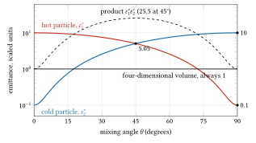
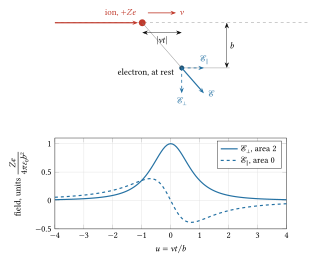
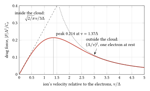
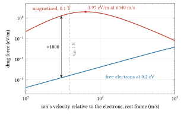
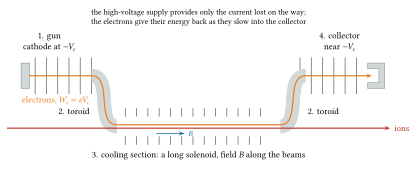
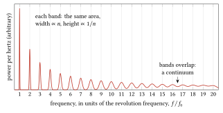
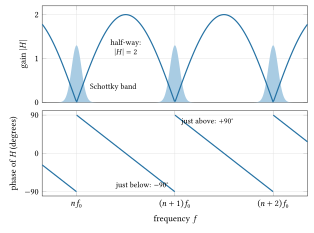
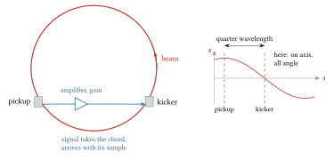

24 Beam cooling and antiparticles
1966 to today: NAP-M, the ISR tests, ICE, the Antiproton Accumulator and Collector, LEAR, the Fermilab Debuncher, Accumulator and Recycler, the AD and ELENA, LEReC, MICE and IOTA; past the wall of Liouville’s theorem, which forbids any applied field from making a beam denser.
Pre-requisites for this chapter.
From Part 0, read first:
- F1 Calculus: the exponential (section 4) for every decay and cooling time, integration by parts (section 7) and Taylor series (section 8) for the Fokker-Planck equation and every first-order expansion, partial derivatives (section 9) for Hamilton’s equations and the flux of particles, and differential equations (section 10) for the balance of damping and heating.
- F2 Vectors: integrals over volumes (section 8) for averages over a velocity distribution, and divergence with Gauss’s theorem (section 10) for Liouville’s theorem and the friction force.
- F3 Mechanics: momentum and impulse (section 3) for the kick in one collision, work and kinetic energy (section 4) for the drag force, collisions (section 6) for the head-on limit, and frames of reference (section 11) for the beam’s rest frame.
- F4 Electricity and magnetism: Coulomb’s law and the field (sections 2 and 3), Gauss’s law (section 4), potential and the electron-volt (section 5), current density (section 8) and the magnetic force that makes charges circle (section 10).
- F5 Oscillations and waves: complex numbers and Euler’s formula (sections 1 and 2) for the notch filter, resonance and its Lorentzian (section 5) for the width of an optical line, the Doppler effect (section 14) for laser cooling, and Fourier’s idea (section 16) for the Schottky signal.
- F6 Heat, gases and probability: mean and variance (section 3), probability densities (section 4), the Gaussian (section 5), the error of a mean (section 8), temperature as energy (sections 11 and 12), the Boltzmann factor (section 13) and entropy (section 16).
- F7 Atoms, nuclei and quanta: the electron-volt and momenta in GeV/\(c\) (section 3), the photon’s energy and momentum (section 4), energy levels (section 7) and antimatter (section 14).
From earlier chapters, and taught in this chapter just before they are needed:
- The machine ideas this chapter starts from: emittance, the area a beam fills in the plane of position and slope (chapter 7); the betatron oscillation and its tune, the betatron function, dispersion and transition (chapter 16, sections 7, 8, 10 and 11); and the slip factor \(\eta\) and bunch rotation (chapter 19).
- Lagrangian and Hamiltonian mechanics: canonical coordinates and momenta, Hamilton’s equations, and why a friction force has no Hamiltonian (section 1).
- Phase space and Liouville’s theorem, continued: the theorem in the \(6N\)-dimensional space of the whole beam against the six-dimensional space of one particle, and the grain of a beam (sections 1 and 8).
- Ordinary differential equations: exponential decay and the equilibrium of a damped quantity with a steady source (sections 1 and 4).
- Diffusion and Fokker-Planck, continued: the Fokker-Planck equation, its steady state and the Einstein relation between friction and random kicks (sections 1, 2 and 8).
- Maxwell-Boltzmann distribution: temperature as \(m\langle v_x^2\rangle\), the Maxwellian, and eV against kelvin (sections 1 to 4).
- Distribution functions and beam temperature, continued: a velocity distribution with different temperatures across and along the beam, and the entropy of a beam (sections 1 and 3 to 5).
- Lorentz transformations, continued: momentum and velocity spreads, densities and clocks in the beam’s rest frame (sections 1, 2 and 4, and the muon’s lifetime in “Where it stops”).
- Four-momentum and invariant mass: \(p = \beta\gamma mc\), \(W = (\gamma - 1)mc^2\), the threshold for making an antiproton and its momentum at rest in the centre of mass (sections 1, 2 and 9).
- Gauss’s law and potentials of simple shapes: the field outside and inside a sphere of charge, used in velocity space for the friction force, and the space-charge depression of the electron beam (sections 3 and 6).
- Special functions and integrals: the Gaussian normalisation and the integrals behind the impulse and the Coulomb logarithm (section 3).
- Debye shielding and plasma frequency, continued: screening of a moving ion, and the relaxation of a suddenly cold electron gas to about 1 K (sections 3 and 4).
- Electrons in metals and the work function: the thermionic cathode and its 0.2 eV energy spread (sections 4 and 6).
- Relativistic motion in electric and magnetic fields: gyration in a solenoid, the Larmor radius and guiding-centre motion (section 5).
- Adiabatic invariants: the magnetic moment \(p_\perp^2/B\) and adiabatic expansion of the electron beam (section 5).
- Photons and the photoelectric effect, continued: the photocathode of LEReC (section 7), and photon recoil and the force limit \(\hbar k\Gamma/2\) of laser cooling (“Where it stops”).
- Simple and damped harmonic oscillator: random betatron phase, displacement turning into angle a quarter wavelength on, and amplitude against squared-amplitude rates (section 8).
- Errors and their propagation: the variance of a sample’s mean and cross terms that average to zero (section 8).
- Sampling, discrete Fourier transform, FFT, aliasing: the time a bandwidth resolves, and the mixed-down, digitised Schottky monitor (section 8 and “At the bench”).
- Fourier series and transforms, continued: the comb of one particle and the Schottky bands of many (section 8).
- Random signals and noise, continued: adding in power, shot noise and the noise-to-signal ratio \(U\) (section 8).
- Impulse response and transfer functions, continued: the one-turn notch filter of momentum cooling (section 8).
- Laplace transform, feedback and stability: the closed cooling loop, its optimum gain and the halved Schottky signal (section 8 and “At the bench”).
- Transmission lines, matching, S-parameters: the shorted line and power into a matched 50 Ω load (section 8).
- Biot-Savart and Ampère’s law: the magnetic horn and the lithium lens (section 9).
- Cross-section, rate and luminosity basics: the collision length of a target and the antiproton yield (section 9).
- Energy loss in matter: the passing-charge impulse behind the friction force (section 3) and \(dE/ds\) in ionisation cooling (“Where it stops”).
- Multiple scattering: the radiation length and the Highland formula that heat a muon beam (“Where it stops”).
In one page
The wall. In a field that derives from a Hamiltonian, the density of particles in phase space is constant along the motion (Liouville). Lenses and RF can reshape a beam but never shrink the volume it fills. Antiprotons are born hot: a 26 GeV/\(c\) proton beam on a target gives about one antiproton per two million protons, spread over a large phase-space volume. A collider needs \(10^{11}\) of them in a small one.
The idea. Couple the beam to something that is not part of its Hamiltonian and carries entropy away. Budker (1966): let the ions travel with a cold electron beam at the same velocity, so that collisions bring them to the electrons’ temperature, then throw the electrons away. Van der Meer (1968): measure a slice of the beam at a pickup and correct its mean at a kicker downstream; each particle’s own signal cools it, the others’ signals heat it. Both reduce the beam’s temperature, defined in its rest frame.
The equations to remember.
\[ W_e = \frac{m_e}{m_i}\,W_i \quad \text{(the cooling electrons' kinetic energy)}, \qquad k_BT_\parallel = \frac{(k_BT_c)^2}{\beta^2\gamma^2 m_ec^2} \]
\[ \mathbf{F} \approx -\frac{4\pi n_{e,r} Z^2 e^4 L_C}{(4\pi\varepsilon_0)^2 m_e}\,\frac{\sqrt{2/\pi}}{3\Delta^3}\,\mathbf{v}, \qquad \tau \propto \frac{A}{Z^2}\,\frac{\beta^4\gamma^5\theta_e^3}{f_c\, j} \]
\[ \frac{1}{\tau} = \frac{W_{\text{bw}}}{2N}\left[2G - G^2(M+U)\right], \qquad \frac{1}{\tau_{\max}} = \frac{W_{\text{bw}}}{2N(M+U)} \]
\[ \langle I_n^2\rangle = 2e^2f_0^2N, \qquad \frac{\Delta f_n}{nf_0} = -\eta\,\delta \]
Here \(T_c\) is the cathode temperature, \(n_{e,r}\) the electron density in the beam’s rest frame (m\(^{-3}\)), \(\Delta\) the electrons’ rms velocity spread there (m/s), \(L_C \approx 10\) the Coulomb logarithm, \(f_c\) the fraction of the ring filled by the cooler, \(j\) the electron current density (A/m\(^2\)), \(\theta_e\) the electrons’ angular spread, \(W_{\text{bw}}\) the cooling system’s bandwidth (Hz), \(N\) the number of particles, \(G\) the fraction of a sample’s error corrected per turn, \(M\) the mixing factor and \(U\) the noise-to-signal ratio. The last line is the Schottky signal: each harmonic band carries a mean-square current proportional to \(N\) and has a width set by the momentum spread.
Numbers worth knowing. Electrons of 35.4 keV cool 65 MeV protons (NAP-M, 1974); 4.36 MeV electrons cool 8.9 GeV/\(c\) antiprotons (Fermilab Recycler, 2005); 54 eV electrons cool 100 keV antiprotons (ELENA). Magnetised cooling is hundreds of times faster than the free-electron estimate. Antiproton yields: \(5.6\times10^{-7}\) per proton (AA, 1984), \(5.2\times10^{-6}\) (AC, 1994), about \(2.5\times10^{-5}\) at 120 GeV (Fermilab). The AA raised the phase-space density by \(5.4\times10^8\); Fermilab stacked \(2.5\times10^{11}\) antiprotons an hour. Stochastic cooling of \(10^{13}\) protons with 1 GHz of bandwidth takes hours: useless for a synchrotron cycle, decisive for a storage ring of \(10^7\) antiprotons.
The wall
The antiproton was found at the Bevatron in 1955. When CERN first discussed proton-antiproton collisions in 1962, it concluded that with the antiproton beam densities then imaginable the luminosity (the rate of collisions per unit cross-section, chapter 3 and chapter 23) would be discouragingly low (so the history of the antiproton rings in Fifty years of the CERN Proton Synchrotron records). The reason is phase space. Antiprotons come from a target struck by protons. They emerge over a range of angles and momenta, from a source a few millimetres across. A ring can accept some of them, but the density in phase space is fixed at birth, and a collider needs that density raised by many orders of magnitude.
Liouville’s theorem forbids doing it with fields. (Phase space is the space of positions and momenta together; chapter 7 proved the theorem, and the pre-requisite below takes it further.) Electron rings escape: electrons radiate, and the radiation damps their oscillations in milliseconds (chapter 20). That is why the first colliders stored electrons (chapter 23). For protons synchrotron radiation only matters at many TeV. The tricks used for protons, such as stacking many injections side by side in momentum (the MURA idea used at the ISR), fill more phase space; they do not make it denser.
Gersh Budker at Novosibirsk was planning VAPP-NAP, a proton-antiproton colliding-beam project, and needed dense antiprotons. At the Saclay symposium on storage rings in September 1966 he proposed electron cooling. His paper of 1967 (Atomnaya Energiya 22, 346; English translation pp. 438 to 440) quoted a 1 A electron beam at 500 keV, a beam power of 0.5 MW, which only made sense if the electrons’ energy was recovered after one pass. Nobody outside Novosibirsk tried it. The first estimates showed that a low electron temperature would be the hard part, and, as van der Meer later put it, the method works well with large-emittance beams only at low energy.
In 1968 Simon van der Meer at CERN had a different idea, stochastic cooling, which he put in an internal note only in 1972 (Stochastic damping of betatron oscillations in the ISR, CERN/ISR-PO/72-31). At first sight it asks electronics to resolve individual particles in a beam of \(10^{14}\), which no electronics can do. The note showed that it does not need to.
Both methods were proven in 1974: electron cooling at NAP-M in Novosibirsk, stochastic cooling at the CERN ISR on 21 October. In 1976 Rubbia, McIntyre and Cline proposed turning a large proton synchrotron into a proton-antiproton collider to find the W and Z. Their first scheme used electron cooling. Whether the antiprotons could be made dense enough was the question on which the whole project stood.
The physics
Pre-requisite (continued): Phase space and Liouville’s theorem
Pre-requisite. Chapter 7 proved Liouville’s theorem in the six-dimensional phase space of one particle, and chapter 19 separated the exact (fine-grained) density from the smoothed (coarse-grained) one. This section asks in which phase space the theorem lives: the \(6N\)-dimensional space of the whole beam, where it always holds, or the six-dimensional space of one particle, where it holds only while each particle moves in fields that do not depend on where the other particles individually are. Section 1 uses the distinction to say exactly what cooling gets round; section 8 uses the graininess of a beam that it brings out. Taught from Landau and Lifshitz, Statistical Physics, §1 to §3 (the phase space of a subsystem, the ensemble, Liouville’s theorem), and Mechanics, §46; and Penrose, The Road to Reality, §27.3 and §27.4 (the phase space of a whole system and coarse graining).
Two pictures of one beam. A beam of \(N\) particles can be drawn in two ways.
- One point per particle. Each particle has its own coordinates and momenta \((x, p_x, y, p_y, z, p_z)\), so the beam is a cloud of \(N\) points in a six-dimensional space. This is the picture of every emittance in the course.
- One point for the whole beam. List all the coordinates and momenta of all the particles, \((x_1, p_{x1}, \ldots, z_N, p_{zN})\): \(6N\) numbers. The whole beam is then a single point in a \(6N\)-dimensional space, and its history a single curve.
The Hamiltonian of the whole beam contains everything: the external fields acting on each particle and the Coulomb energy of every pair,
\[ H = \sum_{i=1}^{N} H_{\text{ext}}(q_i, p_i, t) + \sum_{i<j}\frac{q^2}{4\pi\varepsilon_0\,r_{ij}} , \]
with \(r_{ij}\) the distance between particles \(i\) and \(j\), \(q\) the charge of each particle, and \(H_{\text{ext}}\) the Hamiltonian of one particle in the magnets and cavities (its energy written in terms of its position \(q_i\) and momentum \(p_i\); here, as in chapter 1, \(q_i\) stands for the three coordinates of particle \(i\), not a charge). Hamilton’s equations hold for all \(6N\) variables, and the divergence argument of chapter 7 (repeated in section 1 below) goes through term by term. So in the \(6N\)-dimensional space the flow is always incompressible, collisions included. To speak of a density there, imagine many beams prepared in the same way; their points form a cloud whose volume never changes (Landau and Lifshitz call such a collection an ensemble).
When the one-particle picture obeys the theorem. In the six-dimensional picture each of the \(N\) points moves with the velocity \((\partial H_i/\partial p_i, -\partial H_i/\partial q_i)\) given by its own Hamiltonian \(H_i\), provided the force on particle \(i\) depends only on its own position and momentum and on time. Then the \(N\) points flow like an incompressible fluid in six dimensions, and the smoothed density \(f\) obeys \(df/dt = 0\). This holds for magnets and RF cavities, whose fields are fixed in advance. It holds, to a good approximation, for the beam’s own space charge when that is smoothed into a field computed from \(f\) itself: the Vlasov picture of chapter 7.
It fails when the force on a particle depends on the exact positions of a few particles near it. A close Coulomb collision is one case: the push depends on where the partner happens to be. A kicker driven by the signal of the particles in a sample is another. Then the velocity of the point \((q_i, p_i)\) in the six-dimensional picture depends on the others, and nothing makes it divergence-free. For collisions only the \(6N\)-dimensional volume is protected. For the kicker not even that: it is driven by a powered amplifier outside the beam’s Hamiltonian, as the end of this section says.
A toy exchange. Take two particles in one dimension, with variables \((x_1, p_1, x_2, p_2)\), and let them interact in a way that mixes them:
\[ \begin{aligned} x_1' &= c\,x_1 + s\,x_2, & p_1' &= c\,p_1 + s\,p_2, \\ x_2' &= -s\,x_1 + c\,x_2, & p_2' &= -s\,p_1 + c\,p_2, \end{aligned} \]
with \(c = \cos\theta\) and \(s = \sin\theta\); \(\theta\) measures how thoroughly the two are mixed, from none at \(0°\) to a complete swap at \(90°\). The Poisson brackets of chapter 1, \(\{F, G\} = \sum_k\left(\dfrac{\partial F}{\partial x_k}\dfrac{\partial G}{\partial p_k} - \dfrac{\partial F}{\partial p_k}\dfrac{\partial G}{\partial x_k}\right)\) summed over the two particles, test whether new variables are a proper set of positions and momenta: they are when every new position has bracket 1 with its own momentum and 0 with everything else. Here \(\{x_1', p_1'\} = c\cdot c + s\cdot s = c^2 + s^2 = 1\) and \(\{x_1', p_2'\} = -cs + sc = 0\), and so on: the map is canonical, as any Hamiltonian interaction must be, and it keeps four-dimensional volume.
Now let particle 1 be hot and particle 2 cold. Over many trials, let \(\langle x_1^2\rangle = \langle p_1^2\rangle = \varepsilon_1\) and \(\langle x_2^2\rangle = \langle p_2^2\rangle = \varepsilon_2\), in scaled units, with no correlations, so that each particle’s rms emittance is \(\varepsilon_1\) or \(\varepsilon_2\). (The rms emittance of chapter 7 is \(\sqrt{\langle x^2\rangle\langle p^2\rangle - \langle xp\rangle^2}\); with \(\langle x^2\rangle = \langle p^2\rangle = \varepsilon\) and \(\langle xp\rangle = 0\) it is \(\varepsilon\). The averages are over many repetitions of the experiment, as in F6, section 3.) After the map, square \(x_1' = cx_1 + sx_2\) and average: \(\langle x_1'^2\rangle = c^2\langle x_1^2\rangle + 2cs\langle x_1x_2\rangle + s^2\langle x_2^2\rangle = c^2\varepsilon_1 + s^2\varepsilon_2\), because the two particles are uncorrelated and \(\langle x_1x_2\rangle = 0\). The same holds for \(p_1'\), and \(\langle x_1'p_1'\rangle = 0\) in the same way, so
\[ \varepsilon_1' = c^2\varepsilon_1 + s^2\varepsilon_2 . \]
With \(\varepsilon_1 = 10\) and \(\varepsilon_2 = 0.1\): at \(\theta = 45°\), \(\varepsilon_1' = 5.05\); at \(\theta = 90°\), \(\varepsilon_1' = 0.1\). The hot particle’s own phase-space area has fallen a hundredfold and the cold one’s has risen to match. In four dimensions nothing changed. This is electron cooling in miniature: hand the ion’s phase space to an electron, throw the electron away, bring a fresh cold one.
At \(45°\) something else shows. Each particle now has emittance 5.05, and the product of the two areas is 25.5, against 1.0 before. The four-dimensional volume is still 1.0. The difference lies in correlations between the two particles, which a description particle by particle throws away. Throwing correlations away is coarse graining, and it can only make the apparent volume larger.

Figure 24.1. The toy exchange, computed from \(\varepsilon_1' = c^2\varepsilon_1 + s^2\varepsilon_2\) and \(\varepsilon_2' = s^2\varepsilon_1 + c^2\varepsilon_2\) with \(\varepsilon_1 = 10\) and \(\varepsilon_2 = 0.1\) (logarithmic scale). The hot particle’s emittance (red) falls to 0.1 as the mixing angle goes to \(90°\), while the cold one’s (blue) rises to 10: phase space handed from one to the other. The four-dimensional volume stays 1 throughout. The product of the two separate emittances (dashed) rises to 25.5 at \(45°\): the correlations a particle-by-particle description throws away.
A beam is grainy. The smoothed density treats the beam as a fluid. A real beam is \(N\) points with empty space between them. An instrument that averages over a sample of \(N_s\) particles sees the sample’s centroid, and for particles placed at random that centroid wanders from sample to sample with an rms of \(\sigma/\sqrt{N_s}\), where \(\sigma\) is the rms of the single particles: the error of a mean of \(N_s\) readings (F6, section 8; chapter 1). A smooth fluid would show no such wandering. These fluctuations are the grain of the beam, and they are what a stochastic cooling system measures and removes.
At work: the Antiproton Accumulator. An instrument’s bandwidth \(W_{\text{bw}}\) (the range of frequencies it passes, in Hz) limits how finely it can split time: it cannot tell apart two events closer than about \(1/(2W_{\text{bw}})\), a rule section 8 uses and chapter 8 explains through sampling. So it sees one turn of the beam, of duration \(T_{\text{rev}}\), as \(2W_{\text{bw}}T_{\text{rev}}\) slices, and the \(N\) particles are shared among them. With \(N = 6\times10^6\) antiprotons, a revolution period of 0.542 µs and a bandwidth of 350 MHz, a sample holds \(N_s = N/(2W_{\text{bw}}T_{\text{rev}}) = 1.58\times10^4\) particles, and its centroid wanders by \(\sigma/126\). That is the signal a cooling system works with: small, but not zero. As \(N_s\) grows the grain fades as \(1/\sqrt{N_s}\), and each particle’s own share of its sample’s centroid, \(x_i/N_s\), falls as \(1/N_s\); that share is what cools it, which is why section 8 finds cooling slower in proportion to \(N\).
The pickup, amplifier and kicker are not part of the beam’s Hamiltonian. They are a powered, noisy machine outside it that acts on what it measures. Liouville’s theorem has nothing to say about such a machine, only about fields that are fixed in advance or smooth.
Exercise A1. Check that the exchange map keeps \(\{x_2', p_2'\} = 1\) and \(\{x_1', x_2'\} = 0\), and find \(\varepsilon_1'\) at \(\theta = 30°\) for \(\varepsilon_1 = 10\), \(\varepsilon_2 = 0.1\).
Answer
\(\{x_2', p_2'\} = (-s)(-s) + c\cdot c = 1\). \(\{x_1', x_2'\} = 0\) because both are functions of the coordinates alone, and coordinates have zero brackets with each other. At \(30°\), \(c^2 = 0.75\) and \(s^2 = 0.25\), so \(\varepsilon_1' = 7.5 + 0.025 = 7.525\).
Exercise A2. A ring of 943 m circumference (the ISR’s) holds \(10^{13}\) protons at nearly the speed of light, and a cooling system has a bandwidth of 1 GHz. How many protons are in a sample, and by what fraction of the beam’s rms size does a sample’s centroid wander?
Answer
\(T_{\text{rev}} = 943/c = 3.15\) µs. \(N_s = 10^{13}/(2\times10^9\times3.15\times10^{-6}) = 1.59\times10^9\). The centroid wanders by \(\sigma/\sqrt{N_s} = \sigma/39\,900\): a signal forty thousand times smaller than the beam, the reason van der Meer’s idea looked hopeless at first sight.
Exercise A3. An RF cavity whose voltage follows a programme fixed in advance acts on a beam. Can it raise the smoothed six-dimensional density? What if the voltage is driven by an amplifier fed from a pickup that sees the same beam?
Answer
The programmed cavity gives each particle a kick that depends only on that particle’s arrival phase and on time, so the six-dimensional flow is Hamiltonian and incompressible: no. The pickup-driven cavity gives a kick that depends on where the other particles in the sample are, so the six-dimensional flow need not be incompressible: in principle yes. That is stochastic cooling.
Pre-requisite (continued): Diffusion and Fokker-Planck
Pre-requisite. Chapter 3 gave the random walk and Fick’s law, a flux proportional to minus the gradient, and chapter 20 the balance of random kicks against damping, \(d\langle A^2\rangle/dt = -(2/\tau)\langle A^2\rangle + D\), for the mean square alone. This section derives the equation for the whole distribution, the Fokker-Planck equation, in the flux form of a drift plus a diffusion; finds its steady solution; and shows that a friction caused by a medium at temperature \(T\) always comes with random kicks of a fixed strength (the Einstein relation, one case of the fluctuation-dissipation theorem). That relation gives the equipartition of section 2 and the floor of every cooling method. Section 1 uses the balance, section 2 the equipartition, and section 8 the flux form for stacking. Taught from Tong, Fluid Mechanics, §7.2.2 (the Langevin equation with friction), §7.2.3 (the Einstein relation) and §7.3.1 to §7.3.3 (the Fokker-Planck equation, and velocity diffusion towards the Maxwellian); Lee, Accelerator Physics, appendix A, §II.2 and §II.3 (Langevin and Fokker-Planck equations, and the thermal equilibrium they give); and the Handbook, §2.7.1.1 (the damped diffusion equation of stochastic cooling).
The picture. Follow one component of an ion’s momentum, \(p\) (kg m/s), in the beam’s rest frame. In a short time \(\Delta t\) the collisions change it by a random amount \(\Delta p\). Two numbers describe the change: its mean, \(\langle\Delta p\rangle = A(p)\,\Delta t\), where \(A\) is the drift (a force, in N), and its mean square, \(\langle\Delta p^2\rangle = B\,\Delta t\), where \(B\) is the diffusion rate (in (kg m/s)\(^2\)/s; it is the \(D\) of section 1, renamed here so that it cannot be confused with the \(D\) of Fick’s law). For a friction, \(A = -\lambda p\) with \(\lambda\) in s\(^{-1}\). Higher moments of \(\Delta p\), such as \(\langle\Delta p^3\rangle\), are taken to shrink faster than \(\Delta t\) as \(\Delta t\) is made small, so that they drop out; this is the assumption that each kick is small.
From one particle to the distribution. Let \(\psi(p, t)\) be the number of particles per unit momentum. Take any smooth function \(g(p)\) and ask how its average changes. (The trick is to follow a test quantity \(g\), such as \(p^2\), rather than the density itself; at the end \(g\) is let go and only the density remains.) One particle at \(p\) goes to \(p + \Delta p\), and by Taylor’s theorem (F1, section 8)
\[ g(p + \Delta p) - g(p) = g'(p)\,\Delta p + \tfrac12 g''(p)\,\Delta p^2 + \ldots \]
Average over the random kicks and divide by \(\Delta t\): since \(\langle\Delta p\rangle = A\,\Delta t\) and \(\langle\Delta p^2\rangle = B\,\Delta t\), the particle’s \(g\) changes at the rate \(g'A + \tfrac12g''B\). Sum over all the particles; there are \(\psi\,dp\) of them between \(p\) and \(p + dp\):
\[ \frac{d}{dt}\int g\,\psi\,dp = \int\left(g'A + \tfrac12g''B\right)\psi\,dp . \]
Integrate the right side by parts (F1, section 7), once for the first term and twice for the second, with \(\psi\) vanishing far out so that the boundary terms drop:
\[ \int g'\,(A\psi)\,dp = -\int g\,\frac{\partial(A\psi)}{\partial p}\,dp, \]
\[ \int g''\,\frac{B\psi}{2}\,dp = -\int g'\,\frac{B}{2}\frac{\partial\psi}{\partial p}\,dp = \int g\,\frac{B}{2}\frac{\partial^2\psi}{\partial p^2}\,dp . \]
Each step moves one derivative off \(g\) and onto the other factor, at the price of a minus sign. On the left, \(g\) does not depend on time, so the time derivative falls on \(\psi\) alone. Together:
\[ \int g\,\frac{\partial\psi}{\partial t}\,dp = \int g\left[-\frac{\partial(A\psi)}{\partial p} + \frac{B}{2}\frac{\partial^2\psi}{\partial p^2}\right]dp . \]
This holds for every \(g\), so the brackets must agree point by point. With \(B\) constant,
\[ \frac{\partial\psi}{\partial t} + \frac{\partial\Phi}{\partial p} = 0, \qquad \Phi = A\psi - \frac{B}{2}\,\frac{\partial\psi}{\partial p} . \]
This is the Fokker-Planck equation. The first part is a continuity equation: particles are not lost, they move along \(p\). The flux \(\Phi\) (particles per second crossing a given \(p\)) has two parts. The drift carries the density along at the rate \(A\). The diffusion is Fick’s law in momentum, with diffusion coefficient \(B/2\). The factor \(\tfrac12\) is a convention trap: a random walk whose mean square grows at the rate \(B\) has a Fick coefficient \(B/2\). Van der Meer’s \(D\) in section 8 is the Fick coefficient, measured in Hz\(^2\)/s because his variable is the revolution frequency.
Check against section 1. The quickest way is to go back one step and choose \(g = p^2\), so \(g' = 2p\) and \(g'' = 2\): then \(d\langle p^2\rangle/dt = \langle 2pA\rangle + \tfrac12\cdot 2B = 2\langle pA\rangle + B\) (per particle, with \(\langle\ \rangle\) the average over the distribution). With \(A = -\lambda p\) this is \(-2\lambda\langle p^2\rangle + B\), the balance of section 1.
The steady state. With no flux, \(\Phi = 0\):
\[ -\lambda p\,\psi = \frac{B}{2}\,\frac{\partial\psi}{\partial p} \quad\Longrightarrow\quad \psi \propto \exp\left(-\frac{\lambda p^2}{B}\right), \]
The step: divide by \(\psi\) to get \((1/\psi)\,\partial\psi/\partial p = -2\lambda p/B\); the left side is the derivative of \(\ln\psi\), so integrating gives \(\ln\psi = -\lambda p^2/B + \text{const}\), and taking the exponential gives the result. Compared with the Gaussian \(\exp(-p^2/2\sigma^2)\) of F6, section 5, \(1/(2\sigma^2) = \lambda/B\): a Gaussian with \(\langle p^2\rangle = \sigma^2 = B/(2\lambda)\). Friction against random kicks gives a Gaussian, whatever the shape of the single kicks.
The Einstein relation. Now let the friction and the kicks both come from collisions with a gas of electrons at temperature \(T_e\). If the ion is left with that gas long enough it must come to thermal equilibrium with it, and then its momentum distribution is the Maxwellian of chapter 2, \(\psi \propto \exp(-p^2/2m_ik_BT_e)\), the Boltzmann factor \(e^{-E/k_BT}\) of F6, section 13 with \(E = p^2/2m_i\). Comparing exponents with the steady state, \(\lambda/B = 1/(2m_ik_BT_e)\), so
\[ B = 2\lambda\,m_i\,k_BT_e . \]
The friction fixes the random kicks. Neither can be had without the other, because they are the same collisions seen on average and seen one by one. Tong derives the same relation for a pollen grain in water; Landau and Lifshitz’s fluctuation-dissipation theorem (Statistical Physics, §124) states the general case, of which the thermal noise of a resistor in chapter 8 is another example.
Equipartition. At equilibrium, per component, \(\langle p_i^2\rangle/m_i = k_BT_e = m_e\langle v_e^2\rangle\) (here the subscript \(i\) means ion; each side is twice the mean kinetic energy per direction, \(\tfrac12k_BT\), of F6, section 11), so \(\tfrac12m_i\langle v_i^2\rangle = \tfrac12m_e\langle v_e^2\rangle\). The ions’ velocity spread ends smaller than the electrons’ by \(\sqrt{m_e/m_i}\): 1/42.85 for protons and antiprotons, 1/599 for gold ions.
At work: NAP-M. (NAP-M was the Novosibirsk storage ring where electron cooling was first shown, in 1974; its numbers recur through the chapter.) Suppose the protons came to equilibrium with electrons at the cathode’s 0.2 eV. Their rms velocity in the rest frame would be \(\sqrt{0.2\ \text{eV}/m_p} = 4380\) m/s, an angle in the laboratory of \(4380/(\gamma\beta c) = 39\) µrad (\(\gamma\beta c = 1.135\times10^8\) m/s; a sideways velocity in the beam’s frame divided by \(\gamma\beta c\) is the angle in the laboratory, as the Lorentz pre-requisite below shows). Section 4’s rest-frame cooling time \(\tau_r = 25\) ms gives \(\lambda = 40\) s\(^{-1}\), so the kicks must have \(B = 2\times40\times m_p\times0.2\) eV \(= 4.3\times10^{-45}\) (kg m/s)\(^2\)/s: in one millisecond alone they would spread a cold proton’s velocity by \(\sqrt{B\times10^{-3}\ \text{s}}/m_p = 1240\) m/s. With the electrons’ 1 K along the beam instead (section 4 shows why they are that cold), the equilibrium spread would be 91 m/s, a relative momentum spread \(\sigma_\delta = 91/(\beta c) = 8.6\times10^{-7}\) (by the same pre-requisite, \(\sigma_\delta = v_r/\beta c\) for a rest-frame velocity \(v_r\) along the beam); real beams settle far above that, because other heating (section 5) is stronger.
Exercise B1. A beam starts with \(\langle p^2\rangle\) one hundred times its equilibrium value. After how many cooling times \(1/\lambda\) is it within 10 per cent of equilibrium?
Answer
The solution of \(d\langle p^2\rangle/dt = -2\lambda\langle p^2\rangle + B\) is \(\langle p^2\rangle = p_{\text{eq}}^2 + 99\,p_{\text{eq}}^2e^{-2\lambda t}\). Set the excess to \(0.1\,p_{\text{eq}}^2\): \(e^{-2\lambda t} = 0.1/99\), \(\lambda t = \tfrac12\ln990 = 3.45\). The square relaxes twice as fast as the momentum itself, so three and a half cooling times suffice.
Exercise B2. Antiprotons are cooled by electrons whose effective temperature is \(k_BT_e = 0.1\) eV. What rms velocity do they reach in the rest frame, ignoring other heating? Does the answer depend on how strong the cooling is?
Answer
\(\sqrt{k_BT_e/m_p} = \sqrt{0.1\times1.602\times10^{-19}/1.673\times10^{-27}} = 3090\) m/s. No: by the Einstein relation the kicks grow in proportion to the friction, so \(B/2\lambda = m_pk_BT_e\) whatever \(\lambda\) is. Stronger cooling gets there faster, not further.
Exercise B3. In a stack, let particles drift towards lower revolution frequency at a constant rate, \(A = -F_0\) with \(F_0 > 0\) (in Hz/s), and diffuse with a constant Fick coefficient \(D_f\) (Hz\(^2\)/s). Where no particles flow through, what shape does the density take?
Answer
\(\Phi = -F_0\psi - D_f\,\partial\psi/\partial f = 0\) gives \(\psi \propto e^{-F_0f/D_f}\): the density rises exponentially towards lower frequency, by a factor \(e\) every \(D_f/F_0\) hertz. A density that must rise steeply towards a core asks for strong drift against weak diffusion, the theme of section 8’s stacking.
Pre-requisite (continued): Distribution functions, Vlasov equation, beam temperature
Pre-requisite. Chapter 7 described a beam by its distribution in phase space and defined a transverse temperature by \(\langle p_x^2\rangle = mk_BT\); chapter 16 and chapter 19 added rms emittances, matching and filamentation. This section adds two things. First, a distribution of velocities alone, normalised to 1, with different temperatures across and along the beam: the flattened distribution of sections 3 to 5. Second, the entropy of a beam, which Hamiltonian motion leaves unchanged and cooling lowers, so that the second law demands a medium to carry it away: the remark that closes section 1. Taught from Landau and Lifshitz, Statistical Physics, §7 (entropy as the logarithm of the phase-space volume a system occupies) and §40 (the entropy of an ideal gas not in equilibrium, written with the distribution in one particle’s phase space); and Penrose, The Road to Reality, §27.3 (entropy and coarse graining).
A distribution of velocities. In the beam’s rest frame let \(f(\mathbf u)\,d^3u\) be the fraction of electrons whose velocity lies in the small box \(d^3u\) around \(\mathbf u\) (m/s). Here \(d^3u = du_x\,du_y\,du_z\) is a little box in velocity space, the space whose three axes are the velocity components \(u_x\), \(u_y\), \(u_z\) (each electron is a point there), and an integral over \(d^3u\) is the volume integral of F2, section 8 taken in that space. \(f\) is the three-dimensional version of the probability density of F6, section 4. Since every electron has some velocity,
\[ \int f(\mathbf u)\,d^3u = 1, \qquad \langle g\rangle = \int g(\mathbf u)\,f(\mathbf u)\,d^3u \]
for the average of any quantity \(g\). The units of \(f\) are (m/s)\(^{-3}\). The electrons of a cooler are not equally hot in all directions. Let them have rms velocity \(\Delta_\perp\) in each transverse direction and \(\Delta_\parallel\) along the beam. The distribution is then a product of three Gaussians,
\[ f(\mathbf u) = \frac{1}{(2\pi)^{3/2}\Delta_\perp^2\Delta_\parallel}\exp\left(-\frac{u_x^2 + u_y^2}{2\Delta_\perp^2} - \frac{u_z^2}{2\Delta_\parallel^2}\right), \]
with \(k_BT_\perp = m_e\Delta_\perp^2\) and \(k_BT_\parallel = m_e\Delta_\parallel^2\). Its normalisation follows from the one-dimensional Gaussian integral of chapter 2, applied three times. Two temperatures are allowed because collisions between the electrons are too rare in the short time they spend in the cooler to share energy between directions; a beam is a gas that has not had time to come to equilibrium.
At work. For NAP-M, \(\Delta_\perp = 1.88\times10^5\) m/s (0.2 eV) and \(\Delta_\parallel = 3.9\times10^3\) m/s (1 K): in velocity space the electrons fill a disc 48 times wider than it is thick. The central density \(f(0)\) is 48 times that of an isotropic distribution of rms \(\Delta_\perp\). An ion slower than \(\Delta_\perp\) but faster than \(\Delta_\parallel\) meets electrons that look cold along one direction and hot across it, which is where sections 4 and 5 begin.
The entropy of a beam. F6, section 16 defined entropy by counting, \(S = k_B\ln\Omega\) with \(\Omega\) the number of arrangements. For particles spread evenly over a volume \(V\) of phase space, the number of arrangements per particle grows in proportion to \(V\), so the entropy per particle is \(k_B\ln V\) plus a constant. The density is then \(f = 1/V\), and \(k_B\ln V = -k_B\ln f\). Landau and Lifshitz (§40) give the general form, for a dilute gas that is not in equilibrium and not spread evenly, in terms of its distribution in one particle’s phase space: the same \(-k_B\ln f\), averaged over the particles. Per particle, with \(f\) normalised to 1 over the six-dimensional space,
\[ s = -k_B\,\langle\ln f\rangle + \text{const} = -k_B\int f\ln f\,d^6\Gamma + \text{const}, \]
where \(d^6\Gamma = dx\,dp_x\,dy\,dp_y\,dz\,dp_z\) and the constant depends only on the units chosen for the cell size. The entropy is large when the particles are spread thinly over a large volume, small when they are crowded.
For a Gaussian beam. In one plane, an upright Gaussian has
\[ f = \frac{1}{2\pi\sigma_x\sigma_p}\exp\left(-\frac{x^2}{2\sigma_x^2} - \frac{p^2}{2\sigma_p^2}\right). \]
Then \(\ln f = -\ln(2\pi\sigma_x\sigma_p) - x^2/2\sigma_x^2 - p^2/2\sigma_p^2\), and averaging, with \(\langle x^2\rangle = \sigma_x^2\) and \(\langle p^2\rangle = \sigma_p^2\), the last two terms become \(-\tfrac12\) each: \(-\langle\ln f\rangle = \ln(2\pi\sigma_x\sigma_p) + 1 = \ln(2\pi e\,\sigma_x\sigma_p)\), since \(1 = \ln e\). So
\[ s = k_B\ln\left(2\pi e\,\sigma_x\sigma_p\right) + \text{const} = k_B\ln\varepsilon + \text{const}, \]
since the rms emittance is proportional to \(\sigma_x\sigma_p\) (a tilted ellipse gives the same with the determinant of the second moments). In six dimensions the three planes add: the entropy per particle is \(k_B\) times the logarithm of the occupied phase-space volume. Reducing all three emittances tenfold lowers it by \(k_B\ln1000 = 6.9\,k_B\).
Hamiltonian motion keeps it; cooling lowers it. Under a Hamiltonian flow in one particle’s phase space, \(f\) is carried unchanged along each trajectory and volumes are kept, so \(\int f\ln f\,d^6\Gamma\) is the same integral with its points relabelled: \(s\) cannot change. No lens, cavity or kicker programmed in advance alters a beam’s entropy. Filamentation raises only the coarse-grained entropy, the one computed from the smoothed density. Cooling lowers the true one. The second law (F6, section 16) says that the total entropy of an isolated system cannot fall, so whatever cooled the beam must have gained at least as much: the electrons that are heated and then discarded, the amplifier whose noise and dissipated power end in a load, the photons radiated away, the absorber that warms.
At work. The Antiproton Accumulator raised the six-dimensional density by \(5.4\times10^8\). Each antiproton’s entropy fell by \(k_B\ln(5.4\times10^8) = 20.1\,k_B\); for \(6\times10^{11}\) antiprotons that is \(1.7\times10^{-10}\) J/K, a tiny amount of entropy, but it had to go somewhere. In electron cooling it goes into the electrons with room to spare. An antiproton at 3.5 GeV/\(c\) with \(k_BT_\perp = 13\) keV and \(k_BT_\parallel = 7.9\) keV carries \(\tfrac12(2\times13 + 7.9) = 17\) keV of random kinetic energy in its rest frame. Given to electrons at 0.2 eV, that heat raises their entropy by about \(Q/T_e\) (F6’s \(\Delta S = Q/T\); with \(Q\) and \(k_BT_e\) both in eV, \(Q/T_e = k_B\,Q/(k_BT_e)\)), that is \(k_B\times17\,000/0.2 \approx 8.5\times10^4\,k_B\), four thousand times what the antiproton loses. A heat exchanger between a hot and a cold body is wasteful in entropy, which is why it works.
Exercise C1. Show that the flattened Maxwellian above is normalised, and find the ratio of its \(f(0)\) to that of an isotropic Maxwellian with rms \(\Delta_\perp\) in every direction.
Answer
Each factor is a one-dimensional Gaussian, and \(\int e^{-u^2/2\Delta^2}du = \sqrt{2\pi}\,\Delta\). The product of the three integrals is \((2\pi)^{3/2}\Delta_\perp^2\Delta_\parallel\), which cancels the prefactor. The isotropic one has \(f(0) = (2\pi)^{-3/2}\Delta_\perp^{-3}\), so the ratio is \(\Delta_\perp/\Delta_\parallel\): 48 for NAP-M’s numbers.
Exercise C2. At the AD, stochastic cooling at 3.5 GeV/\(c\) reduces each transverse emittance fourfold and the momentum spread tenfold, with the bunch length unchanged. By how much does each antiproton’s entropy fall?
Answer
The longitudinal emittance falls tenfold, the two transverse ones fourfold each, so the volume falls by \(4\times4\times10 = 160\), and \(\Delta s = -k_B\ln160 = -5.1\,k_B\). (The factors are illustrative; the logarithm makes the entropy forgiving of their exact values.)
Exercise C3. A mismatched beam filaments in a nonlinear field until its rms emittance has doubled. What has happened to its entropy?
Answer
The motion is Hamiltonian, so the true entropy, computed from the exact density, is unchanged. The density has been drawn into fine spiral arms; smoothed over cells larger than the arms, it looks spread over twice the area, and the coarse-grained entropy has risen by about \(k_B\ln2\). Undoing it with fields would mean following every arm exactly, which no lens can do in practice; a cooling system, acting on the particles themselves, shrinks the true volume instead.
Pre-requisite (continued): Lorentz transformations, time dilation, length contraction
Pre-requisite. Chapter 1 gave the Lorentz transformation, time dilation and length contraction; chapter 20 transformed the four-momentum of a photon. This section applies the same transformation to the small spread of momenta and velocities inside a beam, seen from the frame that moves with the beam: transverse momenta are unchanged, a longitudinal momentum spread shrinks by \(\gamma\), a longitudinal velocity spread grows by \(\gamma^2\), densities fall by \(\gamma\) and clocks run slow by \(\gamma\). Section 1 uses it to define a beam’s temperature, section 2 for the velocity error per volt of cathode voltage, section 4 for the density and the time spent in the cooler, and “Where it stops” for the muon’s lifetime. Taught from Landau and Lifshitz, The Classical Theory of Fields, §4 (the Lorentz transformation), §5 (transformation of velocities) and §9 (energy and momentum as a four-vector), and Tong, Classical Mechanics, §11.2.3 to §11.2.5 (time dilation, length contraction, addition of velocities) and §11.4 (four-momentum).
The beam’s rest frame. Let the reference particle (the ideal particle at the centre of the beam, with exactly the design momentum) move along \(z\) with velocity \(\beta_0c\) and Lorentz factor \(\gamma_0 = 1/\sqrt{1 - \beta_0^2}\). The beam’s rest frame is the inertial frame moving with it (F3, section 11). A particle of the beam has momentum \(\mathbf p\) and energy \(E\) (total, rest energy included) in the laboratory; the four-momentum \((E/c, p_x, p_y, p_z)\) transforms like \((ct, x, y, z)\) (chapter 1), so in the rest frame
\[ p_x' = p_x, \qquad p_y' = p_y, \qquad p_z' = \gamma_0\left(p_z - \beta_0\frac{E}{c}\right), \qquad E' = \gamma_0\left(E - \beta_0c\,p_z\right). \]
Transverse momentum is unchanged. A boost along \(z\) leaves \(p_x\) and \(p_y\) alone. A particle at a small angle \(x'\) to the axis has \(p_x = p\,x'\) in both frames, with \(p = \beta_0\gamma_0mc\). In the rest frame it moves slowly, so \(p_x' = mv_x'\) and \(v_x' = \gamma_0\beta_0c\,x'\): angles in the laboratory become sideways velocities in the rest frame, multiplied by \(\gamma_0\beta_0c\).
Longitudinal momentum shrinks by \(\gamma\). Let the particle have \(p_z = p_0 + \Delta p\), slightly off the reference \(p_0\). Its energy changes by \(\Delta E = v_0\Delta p\), since \(dE/dp = v\) (chapter 1; differentiate \(E^2 = p^2c^2 + m^2c^4\) to get \(2E\,dE = 2pc^2\,dp\), so \(dE/dp = pc^2/E = \gamma mvc^2/\gamma mc^2 = v\)). Put \(p_z = p_0 + \Delta p\) and \(E = E_0 + \beta_0c\,\Delta p\) into the transformation and collect the terms with \(\Delta p\):
\[ p_z' = \gamma_0\left(p_0 - \beta_0\frac{E_0}{c}\right) + \gamma_0\,\Delta p\left(1 - \beta_0^2\right) = \frac{\Delta p}{\gamma_0} , \]
because the first bracket is the reference particle’s own momentum in its own rest frame, zero, and \(1 - \beta_0^2 = 1/\gamma_0^2\). A laboratory momentum spread \(\Delta p\) is a rest-frame spread \(\Delta p/\gamma_0\).
Longitudinal velocity grows by \(\gamma^2\). The same result from velocities. Landau and Lifshitz’s law of composition gives the rest-frame velocity of a particle moving at \(v\) along \(z\) in the laboratory:
\[ v' = \frac{v - \beta_0c}{1 - v\beta_0/c} . \]
Differentiate with the quotient rule (F1, section 2): \(dv'/dv = [(1 - v\beta_0/c) + (v - \beta_0c)\beta_0/c]/(1 - v\beta_0/c)^2 = (1 - \beta_0^2)/(1 - v\beta_0/c)^2\). At \(v = \beta_0c\) the denominator is \((1 - \beta_0^2)^2\), so \(dv'/dv = 1/(1 - \beta_0^2) = \gamma_0^2\). So a small spread of laboratory velocities \(dv\) is a rest-frame spread \(dv_r = \gamma_0^2\,dv\). The two results agree: in the laboratory \(p = \gamma mv\) gives \(dp = \gamma_0^3m\,dv\) (the longitudinal mass of chapter 1), and in the rest frame \(dp' = m\,dv_r = \gamma_0^2m\,dv = dp/\gamma_0\). A fast beam is stiff in the laboratory and its spread looks small; in its own frame the same spread is a velocity \(\gamma_0^2\) times larger.
Temperatures. In the rest frame the motion is slow and Newton’s \(k_BT = m\langle v^2\rangle\) per direction applies (each direction holds \(\tfrac12k_BT\) of kinetic energy, F6, section 11). With \(p_x' = p\,x'\) across and \(p_z' = \Delta p/\gamma_0\) along:
\[ k_BT_\perp = \frac{\langle p_x'^2\rangle}{m} = \beta_0^2\gamma_0^2mc^2\,\sigma_{x'}^2, \qquad k_BT_\parallel = \frac{\langle p_z'^2\rangle}{m} = \frac{(p_0\sigma_\delta/\gamma_0)^2}{m} = \beta_0^2mc^2\,\sigma_\delta^2 , \]
with \(\sigma_\delta = \sigma_p/p_0\) the rms relative momentum spread.
Densities and clocks. A bunch of length \(\ell\) in the laboratory is \(\gamma_0\ell\) long in its rest frame (length contraction read backwards), so a density \(n_{\text{lab}}\) becomes \(n_r = n_{\text{lab}}/\gamma_0\). A process that takes a proper time \(\tau\) in the rest frame takes \(\gamma_0\tau\) in the laboratory: a particle crossing a section of length \(L\) at \(\beta_0c\) spends \(L/(\beta_0c)\) by laboratory clocks and \(L/(\gamma_0\beta_0c)\) by its own.
At work: the Recycler. For 8.9 GeV/\(c\) antiprotons, \(\gamma_0 = 9.538\) and \(\beta_0 = 0.99449\). Take an rms angle of 50 µrad and \(\sigma_\delta = 5\times10^{-4}\). Then \(k_BT_\perp = (p\sigma_{x'})^2/mc^2 = 211\) eV and \(k_BT_\parallel = mc^2\beta_0^2\sigma_\delta^2 = 232\) eV, both about \(2.5\times10^6\) K, and the rest-frame rms velocities are \(1.4\times10^5\) and \(1.5\times10^5\) m/s. The 20 m cooling section takes 67 ns of laboratory time but only 7.0 ns of the antiproton’s own: the time the ion actually has to cool is ten times shorter than the laboratory clock suggests, one of the \(\gamma\) factors in Budker’s \(\gamma^5\).
At work: NAP-M’s cathode voltage. For the electrons, \(dW = m_ec^2\,d\gamma = m_ec^2\gamma^3\beta\,d\beta\) (chapter 1; differentiating \(\gamma = (1 - \beta^2)^{-1/2}\) by the chain rule gives \(d\gamma/d\beta = \beta(1 - \beta^2)^{-3/2} = \gamma^3\beta\)). With \(dv_r = \gamma^2c\,d\beta\) and \(dW = e\,dV\), a voltage error \(dV\) moves the electrons by \(dv_r = \gamma^2c\,e\,dV/(m_ec^2\gamma^3\beta) = c\,e\,dV/(m_ec^2\gamma\beta)\) in the rest frame: 1550 m/s per volt at \(\gamma = 1.0693\), \(\beta = 0.354\).
Exercise D1. Check the step \(p_z' = \Delta p/\gamma_0\) numerically: for 8.9 GeV/\(c\) antiprotons with \(\Delta p/p_0 = 10^{-4}\), compute \(p_z'\) from the exact transformation and compare.
Answer
\(p_0 = 8.9\) GeV/\(c\), \(E_0 = \sqrt{8.9^2 + 0.938272^2} = 8.949321\) GeV, \(\beta_0 = 0.994489\), \(\gamma_0 = 9.53809\). With \(p_z = 8.90089\) GeV/\(c\), \(E = 8.950207\) GeV, and \(\gamma_0(p_z - \beta_0E/c)\) gives \(9.3305\times10^{-5}\) GeV/\(c\), against \(\Delta p/\gamma_0 = 8.9\times10^{-4}/9.538 = 9.3310\times10^{-5}\) GeV/\(c\). They agree to 5 parts in \(10^5\), the size of the second-order term the derivation dropped. (The subtraction loses many digits; carry at least ten.)
Exercise D2. Compare the longitudinal temperatures of an antiproton beam with \(\sigma_\delta = 10^{-4}\) at 100 MeV/\(c\) and at 3.5 GeV/\(c\).
Answer
\(k_BT_\parallel = mc^2\beta^2\sigma_\delta^2\). At 100 MeV/\(c\), \(\beta = 0.1060\) and \(k_BT_\parallel = 938.27\times10^6\times0.01123\times10^{-8} = 0.105\) eV. At 3.5 GeV/\(c\), \(\beta = 0.9659\) and \(k_BT_\parallel = 8.75\) eV. The same relative spread is 83 times hotter at the higher momentum, because the same \(\sigma_\delta\) means a larger velocity spread when the particle moves faster.
Exercise D3. MICE’s muons had 140 MeV/\(c\). What is their mean decay length in the laboratory, and what fraction survives a 50 m channel? (Muon mass 105.66 MeV/\(c^2\), lifetime at rest 2.197 µs.)
Answer
\(\beta\gamma = p/mc = 140/105.66 = 1.325\). The lifetime in the laboratory is dilated to \(\gamma\tau\), and in that time the muon travels at \(\beta c\), so the decay length is \(\beta\gamma c\tau = 1.325\times2.998\times10^8\times2.197\times10^{-6} = 873\) m. Surviving 50 m: \(e^{-50/873} = 0.944\). Time dilation makes a 2.2 µs particle usable over a hall, but not over a storage ring’s many turns at this momentum.
1. Phase space, Liouville and the temperature of a beam
Describe each particle by its coordinates and canonical momenta \((x, p_x, y, p_y, z, p_z)\): a point in a six-dimensional space. Hamilton’s equations move the point with velocity \((\dot q, \dot p) = (\partial H/\partial p, -\partial H/\partial q)\), with \(H\) the particle’s energy written in terms of its coordinates \(q\) and momenta \(p\) (chapter 1). The divergence of a velocity field is the rate at which a small volume carried along by it grows, per unit volume (F2, section 10). For this one it is
\[ \sum_k \left(\frac{\partial \dot q_k}{\partial q_k} + \frac{\partial \dot p_k}{\partial p_k}\right) = \sum_k \left(\frac{\partial^2 H}{\partial q_k\partial p_k} - \frac{\partial^2 H}{\partial p_k\partial q_k}\right) = 0 . \]
The flow is incompressible, so the density \(f\) of points obeys \(df/dt = 0\) along each trajectory (Landau and Lifshitz, Mechanics, §46). A cloud of particles can be stretched and folded but its volume never changes.
(the two mixed second derivatives are equal, so each pair cancels). Now add a friction force, \(\dot p = -\lambda p\) with \(\lambda\) in s\(^{-1}\). The divergence becomes \(\partial\dot p/\partial p = -\lambda\) per momentum coordinate: an area \(A\) in one plane obeys \(dA/dt = -\lambda A\), and so shrinks as \(e^{-\lambda t}\) (F1, section 10). Friction alone would cool to zero. Every real friction comes with fluctuations: the same collisions that slow a particle also kick it randomly. With a diffusion rate \(D\) (in momentum\(^2\) per second; the \(B\) of the Fokker-Planck pre-requisite above, which derived this balance),
\[ \frac{d\langle p^2\rangle}{dt} = -2\lambda\langle p^2\rangle + D \quad\Longrightarrow\quad \langle p^2\rangle_{\text{eq}} = \frac{D}{2\lambda} . \]
The friction term carries a \(2\) because \(p^2\) falls twice as fast as \(p\) (\(d(p^2)/dt = 2p\,\dot p = -2\lambda p^2\)); the equilibrium is where the right side is zero.
Every cooling method in this chapter is a balance of this form: a damping that shrinks the beam and a heating that sets its floor.
Two remarks keep the theorem honest. First, Liouville’s theorem applies exactly to the density in the \(6N\)-dimensional space of all \(N\) particles together. What accelerator physicists care about is the smoothed density of particles in the six-dimensional space of one particle. Van der Meer put the trick plainly: particles are points with empty space between them, and a system that knows where the particles are can push them inward and the empty space outward. Second, the entropy goes somewhere: into the electron beam, thrown away each pass; into the amplifier and its noise; into photons; into an absorber.
The temperature of a beam. Thermal language needs a frame in which the beam is at rest on average. Transverse momentum is unchanged by a boost along the beam, so in the rest frame \(p_x = p\,x'\) with \(p = \beta\gamma mc\) the beam momentum. For the longitudinal direction, a lab momentum spread \(\Delta p\) becomes \(\Delta p/\gamma\) in the rest frame (since \(dp = \gamma^3 m\,dv\) and \(dv_r = \gamma^2 dv\)). With \(\sigma_{x'}\) the rms angle and \(\sigma_\delta\) the rms relative momentum spread,
\[ k_BT_\perp = \frac{p^2\sigma_{x'}^2}{m} = \beta^2\gamma^2 mc^2\,\sigma_{x'}^2, \qquad k_BT_\parallel = mc^2\beta^2\,\sigma_\delta^2 . \]
Because \(\sigma_{x'}\) varies round a ring with the beta function (the function \(\beta_x(s)\) of chapter 16, section 7 that sets the local beam size, \(\sigma_x = \sqrt{\varepsilon\beta_x}\); not the velocity \(\beta\)), \(T_\perp\) is a local quantity; it is still the right measure of how fast particles move relative to each other. A 3.5 GeV/\(c\) antiproton beam with 1 mrad rms angle and \(\sigma_\delta = 3\times10^{-3}\) has \(k_BT_\perp = 13\) keV and \(k_BT_\parallel = 7.9\) keV, about \(10^8\) K. A cooled 100 MeV/\(c\) beam with \(\sigma_\delta = 10^{-4}\) has \(k_BT_\parallel = 0.11\) eV. Cooling means bringing these numbers down.
2. Electron cooling: the energy of the electrons
Budker’s picture is a heat exchanger. In the common rest frame, the ions are a hot gas and the electrons a cold one. Collisions share kinetic energy until \(\tfrac12 m_e v_e^2 = \tfrac12 m_i v_i^2\) (equipartition, from the Fokker-Planck pre-requisite), so the ions’ velocity spread ends \(\sqrt{m_e/m_i}\) times the electrons’. For protons that is a factor 42.8.
For the beams to share a rest frame the electrons must have the ions’ velocity, so the same \(\gamma\). Kinetic energy is \(W = (\gamma - 1)mc^2\), so \(\gamma - 1 = W_i/m_ic^2 = W_e/m_ec^2\), hence
\[ W_e = \frac{m_e}{m_i}\,W_i . \]
For ions, \(W_i/m_i\) is the kinetic energy per unit mass, so \(W_e \approx (m_ec^2/m_uc^2)\,W_i/A\), about 549 eV per MeV per nucleon, with \(m_u\) the atomic mass unit and \(A\) the mass number. The numbers, all computed from CODATA masses:
| Beam | \(\gamma\) | Electron energy |
|---|---|---|
| NAP-M protons, 65 MeV | 1.0693 | 35.4 keV |
| AD antiprotons, 300 MeV/\(c\) (46.8 MeV) | 1.0499 | 25.5 keV |
| AD antiprotons, 100 MeV/\(c\) (5.31 MeV) | 1.00566 | 2.89 keV |
| ELENA antiprotons, 100 keV | 1.000107 | 54.5 eV |
| Fermilab Recycler antiprotons, 8.9 GeV/\(c\) | 9.538 | 4.36 MeV |
| RHIC gold, 3.85 GeV per nucleon total | 4.135 | 1.60 MeV |
| RHIC gold, 4.6 GeV per nucleon total | 4.940 | 2.01 MeV |
The Recycler’s cooler ran at 4.3 MeV and LEReC at 1.6 and 2 MeV, as these give. Budker’s 500 keV electrons would have matched 918 MeV protons.
The match must be precise. From \(\beta^2 = 1 - 1/\gamma^2\) (differentiate: \(2\beta\,d\beta = 2\,d\gamma/\gamma^3\), with \(d\gamma = dW/m_ec^2\)), a change \(dW\) in the electron energy changes the velocity by \(d\beta/\beta = dW/(m_ec^2\gamma^3\beta^2)\), and in the rest frame by \(dv_r = \gamma^2c\,d\beta = c\,dW/(m_ec^2\gamma\beta)\) (the Lorentz pre-requisite’s \(\gamma^2\)). At NAP-M that is 1550 m/s per volt. Since, as section 4 shows, the cold part of the electron distribution has a velocity spread of about 4000 m/s, the cathode voltage must be right to within about 2.5 V in 35.4 kV, or \(7\times10^{-5}\). At the Recycler the same volt is worth only 62 m/s.
Pre-requisite (continued): Debye shielding and plasma frequency
Pre-requisite. Chapter 8 derived the plasma frequency \(\omega_p = \sqrt{ne^2/\varepsilon_0m_e}\) of a free electron gas, chapter 13 applied it to an electron beam, and chapter 7’s plasmas for ion sources derived the Debye length of a plasma at rest. This section adds what section 3 and section 4 need of a cooler’s electron beam: that the Debye length is the distance a thermal electron travels in a time \(1/\omega_p\); that a charge moving faster than the electrons is screened beyond about \(v/\omega_p\) instead; and that an electron gas made suddenly cold relaxes to a temperature of order \(e^2n^{1/3}/4\pi\varepsilon_0\), the Coulomb energy between neighbours. Taught from Tong, Electromagnetism, §8.6.3 (plasma oscillations) and §8.7.1 (classical screening, the Debye-Hückel model), and Landau and Lifshitz, Statistical Physics, §78 (the classical plasma: the Debye length and the condition \(e^2n^{1/3} \ll k_BT\) for a plasma to be nearly ideal).
The Debye length, read as a time. Chapter 7 found that a charge placed in a plasma at temperature \(T\) gathers a cloud of opposite charge, and that beyond the Debye length
\[ \lambda_D = \sqrt{\frac{\varepsilon_0k_BT}{ne^2}} \]
its field dies away exponentially (Tong’s equation for the screened potential is the one Landau and Lifshitz write for an ion in a plasma). Divide and multiply by \(m_e\): \(\lambda_D = \sqrt{k_BT/m_e}\,\big/\sqrt{ne^2/\varepsilon_0m_e} = \Delta/\omega_p\), with \(\Delta = \sqrt{k_BT/m_e}\) the rms thermal velocity along one direction. The plasma responds to a disturbance in a time of order \(1/\omega_p\), the period of its natural oscillation divided by \(2\pi\), and in that time a thermal electron moves a distance \(\lambda_D\). Screening is the plasma rearranging itself, and it reaches as far as the electrons can travel while it does so.
A moving charge. Now let the ion pass at speed \(v\) (in the rest frame of the electrons).
- If \(v \ll \Delta\), the electrons have time to settle round the ion as it creeps along. The cloud is the static one, and the field is screened beyond \(\Delta/\omega_p\).
- If \(v \gg \Delta\), think of each electron at impact parameter \(b\). The ion passes it in a time of about \(b/v\). If \(b/v < 1/\omega_p\), the encounter is over before the plasma can react, and the electron feels the bare Coulomb field: the single collision of section 3. If \(b/v > 1/\omega_p\), the passage is slow compared with the plasma’s own oscillation. The electrons then move collectively and smoothly, are pulled in and let go, and take no net energy: like an oscillator whose spring is changed slowly, they respond adiabatically (chapter 7). Only electrons within about \(v/\omega_p\) take energy from the ion.
So the largest useful impact parameter is about the larger of \(v\) and \(\Delta\), divided by \(\omega_p\). This is the same argument as Bohr’s cut-off for the stopping of a fast particle in matter (chapter 8, section 2), where the atomic electrons have their own frequencies of motion; a free electron gas has only one, \(\omega_p\). The electrons the ion has disturbed keep oscillating behind it at \(\omega_p\), a wake of wavelength \(2\pi v/\omega_p\), the same physics that a plasma wakefield accelerator uses on purpose (chapter 27).
At work: NAP-M. In the rest frame \(n_{e,r} = 2.3\times10^{14}/1.0693 = 2.15\times10^{14}\) m\(^{-3}\), so \(\omega_p = 8.27\times10^8\) s\(^{-1}\), a plasma period of 7.6 ns. With \(k_BT_\perp = 0.2\) eV, \(\Delta = 1.88\times10^5\) m/s and \(\lambda_D = 0.23\) mm. The Debye sphere, of radius \(\lambda_D\), holds \(\tfrac43\pi\lambda_D^3n = 1.0\times10^4\) electrons: many, so the screening cloud is smooth and the gas is a true plasma. A proton moving at \(1.1\times10^5\) m/s is screened at \(v/\omega_p = 0.13\) mm instead. The proton spends \(\tau_{\text{fl}} = 8.8\) ns in the 1 m cooler (rest-frame time), \(\omega_p\tau_{\text{fl}} = 7.3\): just over one plasma period, so the screening has only just time to form, and \(b_{\max}\) is known only to a factor of order one. In the Coulomb logarithm such a factor matters little.
How cold can an electron gas be? Landau and Lifshitz’s condition for a plasma to behave as a nearly ideal gas is that the Coulomb energy of two neighbours be small against the thermal energy. Neighbours are about \(a = n^{-1/3}\) apart, so define the coupling
\[ \Gamma_p = \frac{e^2n^{1/3}}{4\pi\varepsilon_0\,k_BT} . \]
For \(\Gamma_p \ll 1\) the electrons move almost freely, with the Debye cloud as a small correction. For \(\Gamma_p \gtrsim 1\) each electron’s motion is dominated by its neighbours.
Section 4 shows that acceleration makes the electrons’ longitudinal temperature tiny, \(5.5\times10^{-7}\) eV at NAP-M. Their positions, though, were set at the cathode, where they were hot: along the beam they lie at random, not at the even spacing that would minimise their mutual repulsion. Random placement holds extra potential energy of order \(e^2/(4\pi\varepsilon_0a)\) per electron. The electrons push apart towards a more even spacing and this energy becomes motion along the beam. An electron with that energy crosses the distance \(a\) in a time of order a plasma period, so the relaxation is fast. It stops when the kinetic energy has risen to about the Coulomb energy, \(\Gamma_p \approx 1\):
\[ k_BT_\parallel \approx \frac{e^2n^{1/3}}{4\pi\varepsilon_0} . \]
(In other cold plasmas this is called disorder-induced heating.) At NAP-M, \(e^2n_{e,r}^{1/3}/4\pi\varepsilon_0 = 8.6\times10^{-5}\) eV, 1.0 K. Before relaxation \(\Gamma_p = 157\); after, about 1. The transverse temperature, 0.2 eV, has \(\Gamma_p = 4\times10^{-4}\) and is untouched. The floor scales only as \(n^{1/3}\): a beam eight times less dense relaxes to half the temperature.
Exercise E1. An electron beam in a low-energy cooler has, in its rest frame, \(n = 10^{13}\) m\(^{-3}\) and \(k_BT_\perp = 0.1\) eV. Find \(\omega_p\), the Debye length and the number of electrons in a Debye sphere.
Answer
\(\omega_p = \sqrt{10^{13}\times(1.602\times10^{-19})^2/(8.854\times10^{-12}\times9.109\times10^{-31})} = 1.78\times10^8\) s\(^{-1}\). \(\lambda_D = \sqrt{8.854\times10^{-12}\times0.1/(10^{13}\times1.602\times10^{-19})} = 0.74\) mm. \(\tfrac43\pi\lambda_D^3n = 1.7\times10^4\). A dilute beam is still a plasma, with a screening length approaching a millimetre.
Exercise E2. At NAP-M, by how much does the Coulomb logarithm change if \(b_{\max}\) is taken as \(v/\omega_p\) for a proton at \(1.1\times10^5\) m/s instead of \(\Delta/\omega_p\)?
Answer
\(\ln(0.227/0.133) = 0.53\), against \(L_C \approx 10\): about 5 per cent. The logarithm is forgiving of the uncertain cut-offs, which is why a simple estimate of the friction force works as well as it does.
Exercise E3. Show that the time for the longitudinal relaxation at NAP-M is of the order of a plasma period, by estimating the time an electron with kinetic energy \(8.6\times10^{-5}\) eV takes to cross the mean spacing.
Answer
\(a = n_{e,r}^{-1/3} = (2.15\times10^{14})^{-1/3} = 16.7\) µm. An energy of \(8.6\times10^{-5}\) eV gives \(v = \sqrt{2E/m_e} = 5500\) m/s, and \(a/v = 3.0\) ns, against \(1/\omega_p = 1.2\) ns and a plasma period of 7.6 ns. The relaxation takes a few nanoseconds, comparable with a plasma period and short compared with the electrons’ journey from the gun through the cooler.
3. The friction force
One collision. Work in the rest frame. An ion of charge \(Ze\) passes an electron at rest with speed \(v\) and impact parameter \(b\), the distance of closest approach if the ion went straight on (figure 24.2). Count time \(t\) from the moment of closest approach; the ion is then a distance \(\sqrt{b^2 + v^2t^2}\) from the electron, and Coulomb’s law (F4, sections 2 and 3) gives a field of size \(Ze/[4\pi\varepsilon_0(b^2 + v^2t^2)]\) along the line between them. Its component across the path is that times \(b/\sqrt{b^2 + v^2t^2}\), so the electron feels the transverse field \(\mathcal{E}_\perp = Zeb/[4\pi\varepsilon_0(b^2 + v^2t^2)^{3/2}]\). The component along the path points one way while the ion approaches and the other way after it has passed, with the same strength at \(-t\) as at \(+t\), so its pushes cancel. The momentum given is the impulse, force times time summed up (F3, section 3):
\[ \Delta p = e\int_{-\infty}^{\infty} \mathcal{E}_\perp\,dt = \frac{2Ze^2}{4\pi\varepsilon_0\,b\,v} . \]
The integral: substitute \(u = vt/b\), so \(dt = (b/v)\,du\), and
\[ \int_{-\infty}^{\infty}\frac{b\,dt}{(b^2 + v^2t^2)^{3/2}} = \frac{1}{bv}\int_{-\infty}^{\infty}\frac{du}{(1 + u^2)^{3/2}} = \frac{2}{bv}, \]
since \(u/\sqrt{1 + u^2}\) has derivative \(1/(1 + u^2)^{3/2}\) and runs from \(-1\) to \(+1\). The picture is a field of peak strength \(Ze/4\pi\varepsilon_0b^2\) acting for a time of about \(2b/v\).

Figure 24.2. One collision in the beam’s rest frame. Top: the ion (charge \(+Ze\)) moves at \(v\) along its path and passes an electron at rest a distance \(b\) away. Its field at the electron points away from the ion, and splits into a part across the path, \(\mathcal{E}_\perp\), and a part along it, \(\mathcal{E}_\parallel\). Bottom: the two parts against time, computed from Coulomb’s law, in units of the peak field \(Ze/4\pi\varepsilon_0b^2\), with \(u = vt/b\). \(\mathcal{E}_\perp\) keeps its sign and has area 2; \(\mathcal{E}_\parallel\) changes sign as the ion passes and has area 0. The force on the electron is \(-e\) times the field: it is pulled towards the ion’s path.
This impulse approximation needs the electron to move little during the passage, true for \(b\) well above \(b_{\min}\) below. The electron gains energy \(\Delta p^2/2m_e\), which the ion loses.
Many collisions. In a path \(dx\) the ion meets \(n_{e,r}\,2\pi b\,db\,dx\) electrons at impact parameters between \(b\) and \(b + db\), where \(n_{e,r}\) is the electron density in the rest frame (m\(^{-3}\)): they fill a thin cylindrical shell of radius \(b\), thickness \(db\) and length \(dx\), of volume \(2\pi b\,db\,dx\). The energy lost per metre is
\[ \frac{dE}{dx} = \int n_{e,r}\frac{\Delta p^2}{2m_e}\,2\pi b\,db = \frac{4\pi n_{e,r} Z^2e^4}{(4\pi\varepsilon_0)^2 m_e v^2}\,\ln\frac{b_{\max}}{b_{\min}} . \]
The step: \(\Delta p^2/2m_e = 2Z^2e^4/[(4\pi\varepsilon_0)^2m_eb^2v^2]\), and times \(2\pi b\) this leaves \(4\pi Z^2e^4/[(4\pi\varepsilon_0)^2m_ev^2]\) multiplying \(db/b\), whose integral is \(\ln b\) (F1, section 4). The integral diverges at both ends, so it must be cut off at a smallest and a largest \(b\), given next.
This is a drag force \(F = -dE/dx\) along \(\mathbf v\): the energy lost per metre is the force that does the work (F3, section 4). The logarithm, \(L_C = \ln(b_{\max}/b_{\min})\), is the Coulomb logarithm. At small \(b\) the impulse cannot exceed the head-on value \(2m_ev\) (a heavy body moving at \(v\) that strikes a light one at rest sends it off at \(2v\), F3, section 6); setting \(2Ze^2/(4\pi\varepsilon_0bv) = 2m_ev\) gives \(b_{\min} = Ze^2/(4\pi\varepsilon_0 m_ev^2)\). At large \(b\) the electrons screen the ion’s field, beyond about \(v/\omega_p\) with \(\omega_p = \sqrt{n_{e,r}e^2/\varepsilon_0m_e}\) the plasma angular frequency; and the ion spends only a time \(\tau_{\text{fl}} = L_{\text{cool}}/(\gamma\beta c)\) in the cooler (rest-frame time; \(L_{\text{cool}}\) is the lab length of the cooling section), which caps \(b_{\max}\) at \(v\tau_{\text{fl}}\). The same physics is the stopping of a charged particle in matter; Landau and Lifshitz, Mechanics, §§19 and 20, treat Rutherford and small-angle scattering.
Moving electrons. The electrons are not at rest; they have a velocity distribution \(f(\mathbf u)\) normalised to 1. An electron moving at \(\mathbf u\) looks, to the ion, like an electron at rest passed at the relative velocity \(\mathbf v - \mathbf u\). So the drag it causes is the result above with \(\mathbf v - \mathbf u\) in place of \(\mathbf v\): of size \(C_F/|\mathbf v - \mathbf u|^2\), pointing against \(\mathbf v - \mathbf u\), which is the vector \(-C_F(\mathbf v - \mathbf u)/|\mathbf v - \mathbf u|^3\). Averaging the single-electron result over the distribution,
\[ \mathbf F(\mathbf v) = -C_F\int f(\mathbf u)\,\frac{\mathbf v - \mathbf u}{|\mathbf v - \mathbf u|^3}\,d^3u, \qquad C_F = \frac{4\pi n_{e,r} Z^2e^4 L_C}{(4\pi\varepsilon_0)^2 m_e}, \]
treating \(L_C\) as constant. Compare Coulomb’s law for a spread of charge: a charge density \(\rho(\mathbf r')\) makes at the point \(\mathbf r\) the field \(\int\rho(\mathbf r')\,(\mathbf r - \mathbf r')/|\mathbf r - \mathbf r'|^3\,d^3r'\), divided by \(4\pi\varepsilon_0\). The integral above has exactly this form, with velocities in place of positions. So it is the electric field at the point \(\mathbf v\) produced by a charge density \(f\) in velocity space, with the constants of Coulomb’s law dropped. Gauss’s law (F4, section 4; chapter 1) gives it at once for a spherically symmetric \(f\): at distance \(v\) from the centre the field is the “charge” inside the sphere of radius \(v\), divided by \(v^2\) (in these units a point charge \(Q\) gives \(Q/v^2\)), and the shells outside give nothing. Far outside the distribution (\(v \gg \Delta\)) all the “charge”, 1, is inside, and the field is that of a point charge, \(\mathbf v/v^3\): the single-electron result. Deep inside it, near the centre, the density is nearly uniform at \(f(0)\); the sphere of radius \(v\) holds \((4\pi/3)v^3f(0)\), and the field grows linearly, \((4\pi/3)f(0)\,\mathbf v\), like the field inside a uniform ball of charge. For an isotropic Maxwellian with rms velocity \(\Delta\) per component, \(f(0) = (2\pi\Delta^2)^{-3/2}\) (the flattened distribution of the pre-requisite with \(\Delta_\perp = \Delta_\parallel = \Delta\), at \(\mathbf u = 0\)), so \((4\pi/3)f(0) = 4\pi/[3(2\pi)^{3/2}\Delta^3] = \sqrt{2/\pi}/(3\Delta^3)\) and
\[ \mathbf F \approx -C_F\,\frac{\sqrt{2/\pi}}{3\Delta^3}\,\mathbf v \qquad (v \ll \Delta). \]
In between, the “charge” inside radius \(v\) is the fraction \(P(v)\) of electrons slower than \(v\), and \(|\mathbf F| = C_FP(v)/v^2\). For the Maxwellian, \(P\) follows from the integrals of chapter 2: with \(x = v/\Delta\), \(P = \operatorname{erf}(x/\sqrt2) - \sqrt{2/\pi}\,x\,e^{-x^2/2}\). Figure 24.3 plots it. So the force rises linearly with the ion’s velocity, peaks near \(v \approx 1.4\Delta\), and falls as \(1/v^2\) beyond. Slow ions are cooled at a rate independent of their velocity (a force proportional to \(v\) makes \(v\) decay exponentially, at a fixed rate); fast ions are cooled slowly.

Figure 24.3. The drag force on an ion in an isotropic Maxwellian of electrons with rms velocity \(\Delta\) per component, computed from \(|F| = C_FP(v)/v^2\), in units of \(C_F/\Delta^2\). Inside the cloud of electron velocities (\(v \ll \Delta\)) the force grows linearly (dashed: \(\sqrt{2/\pi}\,v/3\Delta\)); outside it falls as \(1/v^2\) (dotted), as if all the electrons were at rest. The peak, 0.214, is at \(v = 1.37\Delta\).
4. The cooling time, and why the electrons are colder than their cathode
In the linear region the force is \(-kv\) with \(k = C_F\sqrt{2/\pi}/(3\Delta^3)\), and Newton’s law \(m_i\,dv/dt = -kv\) makes the ion’s velocity decay as \(e^{-t/\tau_r}\) with \(\tau_r = m_i/k = m_i v/F\) in the rest frame. The ion is in the cooler only a fraction \(f_c = L_{\text{cool}}/C\) of the time, where \(C\) is the ring circumference, and rest-frame time runs \(\gamma\) times slower than lab time. The electron density follows from the current density \(j\) (A/m\(^2\); F4, section 8): in the lab \(j = n_{e,\text{lab}}\,e\,\beta c\), and the rest-frame density is \(\gamma\) times smaller, so \(n_{e,r} = j/(e\beta c\gamma)\). With this and \(m_i = Am_u\), putting \(C_F\) into \(\tau_r\),
\[ \tau = \frac{\gamma\tau_r}{f_c} = \frac{3\,Am_u\,m_e\,(4\pi\varepsilon_0)^2\,\Delta^3\,e\beta c\,\gamma^2}{\sqrt{2/\pi}\;4\pi Z^2e^4L_C\,f_c\,j} . \]
If the electrons’ angular spread \(\theta_e\) in the lab is held fixed, then \(\Delta = \gamma\beta c\,\theta_e\) (the rest-frame sideways velocity of the Lorentz pre-requisite). Count the powers: \(\Delta^3\) brings \(\gamma^3\beta^3\), and the factors \(\beta\gamma^2\) already there make \(\beta^4\gamma^5\). So \(\tau \propto A\beta^4\gamma^5\theta_e^3/(Z^2f_cj)\): Budker’s scaling. Two lessons follow. Highly charged heavy ions cool fast (\(Z^2/A\)). High energies are very hard (\(\gamma^5\)).
NAP-M. The parameters are from Parkhomchuk and Skrinsky’s review: 65 MeV protons, a 47.2 m ring, a cooling section of effective length about 1 m (\(f_c = 0.021\)), electron current 0.3 A and lab density \(2.3\times10^8\) cm\(^{-3}\) (which implies a beam radius of 4.9 mm), cathode temperature 0.2 eV. Then \(\Delta = \sqrt{k_BT_c/m_e} = 1.9\times10^5\) m/s, \(\omega_p = 8.3\times10^8\) s\(^{-1}\) in the rest frame, and, taking the typical relative speed \(v = \Delta\), \(b_{\min} = 7.2\) nm, \(b_{\max} = \Delta/\omega_p = 0.23\) mm (shorter than \(\Delta\tau_{\text{fl}} = 1.7\) mm) and \(L_C = 10.4\). The formula gives \(\tau_r = 25\) ms and \(\tau = 1.3\) s. A proton with a 1 mrad angle moves at \(1.1\times10^5\) m/s in the rest frame, inside the linear region. The experiment of 1974 took several seconds to cool, close to this kind of estimate.
The flattened distribution. In 1976 the NAP-M team measured the longitudinal drag as a function of the velocity difference between the beams. For electrons at the cathode temperature the force should have fallen once the velocity difference dropped below about \(2\times10^5\) m/s. Instead it kept rising as the difference shrank to about \(10^4\) m/s. The electrons were far colder along the beam than across it. The reason is the acceleration. At the cathode every electron has an energy spread of about \(k_BT_c\). An electrostatic gun adds the same energy \(eV\) to all, so the spread in energy stays \(k_BT_c\) while the spread in velocity collapses. The reason is the square in the kinetic energy: near a large speed \(v\), a given change of energy is a small change of speed, as \(\Delta(\tfrac12mv^2) \approx mv\,\Delta v\) shows. Precisely: from \(dE = v\,dp\), \(\Delta p = k_BT_c/v\), which in the rest frame is \(\Delta p/\gamma\), so
\[ k_BT_\parallel = \frac{(\Delta p/\gamma)^2}{m_e} = \frac{(k_BT_c)^2}{\beta^2\gamma^2 m_ec^2} . \]
with \(v = \beta c\) and \(\gamma\) the electrons’ (the same as the ions’). At NAP-M this is \(5.5\times10^{-7}\) eV (0.006 K), \(3.7\times10^5\) times colder than the cathode. It does not stay that low: the electrons, suddenly cold along the beam, repel each other and relax (the disorder-induced heating of the Debye pre-requisite) to a longitudinal temperature of order \(e^2n_{e,r}^{1/3}/4\pi\varepsilon_0\), which is \(8.6\times10^{-5}\) eV, 1.0 K. Parkhomchuk and Skrinsky quote the same 1 K for \(n_e \approx 10^8\) cm\(^{-3}\). The transverse temperature remains the cathode’s 0.2 eV, about 2300 K.
5. Magnetised cooling
The electron beam travels through a solenoid, needed anyway to stop its own space charge blowing it apart. In a field \(B\) an electron gyrates, that is, circles round a field line while it slides along it, with radius \(r_L = m_e\Delta_\perp/eB\) (the Larmor radius; F4, section 10 gives \(R = p/qB\) for the circle, with \(p = m_e\Delta_\perp\) the sideways momentum), with \(\Delta_\perp\) its transverse rms velocity; at 0.1 T and 0.2 eV that is 11 µm, and one turn takes \(2\pi m_e/eB = 0.36\) ns. An ion passing at an impact parameter much larger than \(r_L\) takes long compared with a gyration; the electron’s fast circular motion averages out, and the ion sees a charge free to slide along the field line, with only the tiny longitudinal velocity spread. Over that range of impact parameters the electrons behave as if their temperature were \(T_\parallel\), not \(T_\perp\). This is fast, or magnetised, cooling, found at NAP-M in 1976 and worked out by Derbenev and Skrinsky.
A practical form of the force, from Parkhomchuk, fits the measurements:
\[ \mathbf F = -\frac{4Z^2e^4n_{e,r}}{(4\pi\varepsilon_0)^2m_e}\,\frac{\mathbf v}{(v^2 + v_{\text{eff}}^2)^{3/2}}\,\ln\frac{b_{\max} + b_{\min} + r_L}{b_{\min} + r_L} \]
where \(v_{\text{eff}}\) is an effective electron velocity: the longitudinal spread plus any slow sideways drifts of the Larmor circles (the centres the electrons circle round, called guiding centres) caused by field errors and space charge. Compared with section 3’s force, the electrons’ velocity spread is now \(v_{\text{eff}}\) instead of \(\Delta_\perp\), and the logarithm counts only collisions at impact parameters beyond \(r_L\), where the gyration averages out. It is quoted, not derived; its source is the review by Parkhomchuk and Skrinsky (2000), equation (16). Take NAP-M’s beam, an assumed 0.1 T, and \(v_{\text{eff}} = 3.9\times10^3\) m/s from the 1 K above, with \(b_{\min} = Ze^2/[4\pi\varepsilon_0 m_e(v^2 + v_{\text{eff}}^2)]\) and \(b_{\max} = v/\omega_p\) (the peak’s position depends on these choices by some tens of per cent). The force peaks at about 2 eV/m (20 meV/cm) at 6300 m/s, of the same order as the drag measured at NAP-M (their figure 1, plotted in meV/cm). At \(3\times10^3\) m/s it is about 1000 times the non-magnetised force, and the cooling time for ions this slow falls from about a second to about a millisecond. Parkhomchuk recalls the gain as a factor of hundreds.

Figure 24.4. The drag force at NAP-M against the ion’s velocity relative to the electrons, both computed from this chapter’s formulas with the numbers above (\(n_{e,r} = 2.15\times10^{14}\) m\(^{-3}\)). Blue: free electrons at 0.2 eV, section 3’s isotropic force with \(L_C = 10.4\), rising linearly, since all these velocities are well inside \(\Delta = 1.9\times10^5\) m/s. Red: Parkhomchuk’s magnetised force in 0.1 T with \(v_{\text{eff}} = 3.9\times10^3\) m/s (dashed line), peaking at 1.97 eV/m at 6340 m/s. At \(3\times10^3\) m/s the magnetised force is about 1000 times larger: slow ions meet electrons that are, along the field, a thousand times colder than the cathode.
The transverse temperature can be lowered too, by adiabatic expansion. In a slowly varying field the magnetic moment \(p_\perp^2/B\) of a gyrating electron is an adiabatic invariant (chapter 7; Tong, Classical Mechanics, section 10.6.1): a quantity that stays fixed when the field changes slowly compared with one gyration. Make the cathode field larger than the cooling-section field by a factor \(k_{\text{exp}}\), and \(p_\perp^2\), so \(k_BT_\perp = p_\perp^2/m_e\), falls by \(k_{\text{exp}}\) as the electrons pass into the weaker field; their beam widens by \(\sqrt{k_{\text{exp}}}\), following the field lines as they spread. The SIS cooler at GSI allows expansion factors from 1 to 8.
Equilibrium. Cooling stops when it balances heating. For a weak ion beam the heating is the electrons’ own random kicks, and the ions reach the electrons’ effective temperature, of order 1 K longitudinally. For a strong beam, intrabeam scattering (collisions of the beam’s particles with one another, which share energy between the directions and heat the beam; chapter 22) heats faster, and the beam’s own space charge shifts its tune towards resonances. For highly charged ions, capture of an electron changes the charge and loses the ion (the ion’s charge-to-momentum ratio changes, so the ring’s magnets no longer hold it); this recombination, in which the captured electron gives up its energy as a photon (radiative recombination), grows as the electrons get colder. In the opposite limit, at very low intensity, the ESR at GSI found in 1996 that below several thousand ions the momentum spread dropped sharply, as if the ions had stopped passing each other: an ordered beam (see “Where it stops”).
6. The cooler itself
An electron cooler has four parts (figure 24.5).
- The gun. A thermionic cathode (a hot metal surface that boils off electrons, chapter 2), often 25 mm or more across, in a solenoid field, with Pierce electrodes (shaped electrodes that keep a space-charge-limited beam parallel) shaping the flow (chapter 7). It sits at a negative potential \(-V_c\) with \(eV_c = W_e\).
- The transport. Toroidal bends (curved solenoids, whose field lines turn a corner and carry the electrons round with them) merge the electron beam onto the ion orbit and separate it again, all inside the solenoid field so that the electrons stay magnetised. The heavy ions, far stiffer, are barely deflected by the toroid’s field, and small correcting magnets put them back on line.
- The cooling section. A long solenoid, 1 to 3 m in low-energy coolers (20 m at Fermilab and RHIC, where the field was weak or absent), whose field lines must be parallel to the ion orbit to a few times \(10^{-5}\) rad (the SIS cooler quotes \(5\times10^{-5}\)), because a field line at an angle drags the Larmor circles sideways.
- The collector. A decelerating electrode near cathode potential, which catches the electrons after they have slowed. The high-voltage supply then provides only the current lost on the way, and a low-voltage supply the collector’s few kV.

Figure 24.5. An electron cooler, schematic and not to scale. The electrons (orange) leave the gun, whose cathode sits at \(-V_c\), with kinetic energy \(W_e = eV_c\); a toroid bends them onto the ion orbit; they travel with the ions (red) through the long cooling solenoid, whose field \(B\) runs along both beams; a second toroid bends them off, and they slow down into the collector, which sits a little above cathode potential. Solenoid coils (grey) surround the electrons all the way, so that they stay wrapped round the field lines.
Energy recovery is what makes the scheme possible. The electrons climb back up the potential they fell down, so they arrive at the collector with only a little energy, and the power they carried returns to the field instead of heating the collector. NAP-M’s beam carried 0.3 A at 35.4 kV, 10.6 kW. Fermilab’s carried up to 0.5 A at 4.3 MV, 2.15 MW, in a Pelletron (a belt-charged electrostatic generator whose belt is a chain of metal pellets, chapter 6) that could carry only about 100 µA to ground; the electrons were recirculated with a relative loss of \(2\times10^{-5}\), 10 µA, 43 W.
The electron beam’s space charge (the charge of its own electrons) depresses the potential on its axis. For a uniform beam of current \(I\) and speed \(\beta c\), the potential difference between axis and edge is
\[ \Delta V = \frac{I}{4\pi\varepsilon_0\,\beta c} = (30\ \Omega)\,\frac{I}{\beta} , \]
The step: the beam carries a charge \(\lambda = I/(\beta c)\) per metre. Inside a uniform cylinder of radius \(a\), Gauss’s law (chapter 1) gives the radial field \(\mathcal{E} = \lambda r/(2\pi\varepsilon_0a^2)\) at radius \(r\): only the charge inside \(r\) counts. The potential difference from axis to edge is the integral of the field, \(\int_0^a\lambda r\,dr/(2\pi\varepsilon_0a^2) = \lambda/(4\pi\varepsilon_0)\), whatever the radius. The constant \(1/(4\pi\varepsilon_0c) = 29.98\) Ω gives the second form. That is 25 V at NAP-M, which makes electrons on the axis slower than those at the edge by \(3.9\times10^4\) m/s in the rest frame (25.4 V at section 2’s 1550 m/s per volt), ten times the cold spread. So the ion beam must be small compared with the electron beam, or the electrons partly neutralised by trapped ions (positive ions of the residual gas, held in the electron beam’s potential well, whose charge cancels part of the electrons’). Uncontrolled neutralisation is harmful; the bench section below tells the NAP-M story.
Pre-requisite (continued): Photons and the photoelectric effect
Pre-requisite. Chapter 1 gave the photon’s energy \(hc/\lambda\) and momentum \(E/c\), and chapter 7 the photocathode, which LEReC’s laser-lit gun in section 7 uses. This section adds what laser cooling (“Where it stops”) needs: the recoil an ion feels when it absorbs a photon, why the photons it re-emits give no average push, why an atom or ion can scatter at most \(\Gamma/2\) photons a second, so that the force is at most \(\hbar k\Gamma/2\), and why that force acts only on ions in a narrow window of velocity. Taught from Tong, Quantum Mechanics, §13.3.1 (Rabi oscillations of a two-level atom in light) and §13.3.2 (spontaneous emission and the Einstein A and B coefficients); Landau and Lifshitz, The Classical Theory of Fields, §9 (momentum of a particle of zero mass); and, for the frequency an ion sees, the Doppler shift of chapter 20.
One photon, one kick. A photon of wavelength \(\lambda\) has momentum \(h/\lambda = \hbar k\) (F7, section 4), with \(\hbar = h/2\pi\) the reduced Planck constant and \(k = 2\pi/\lambda\) the wavenumber (m\(^{-1}\)). An ion that absorbs it from a laser beam takes up that momentum along the beam and changes its velocity by the recoil velocity \(v_{\text{rec}} = \hbar k/m\). For a \(^7\)Li\(^+\) ion (\(m = 1.165\times10^{-26}\) kg) and light of 548.5 nm (the ion’s cooling transition, in its own frame), \(v_{\text{rec}} = 0.104\) m/s. Tiny, but an ion can absorb millions of photons a second.
Re-emission averages to nothing. The ion, now excited (raised to a higher energy level, F7, section 7), falls back after a time of order \(1/\Gamma\), where \(\Gamma\) (s\(^{-1}\)) is the spontaneous decay rate of the excited level, and sends a photon out in a random direction. Each emission kicks the ion by \(\hbar k\) too, but in a direction that is equally likely to be any, so the kicks average to zero. They do not vanish one by one: they are random kicks of fixed size, and by the Fokker-Planck section they heat. Absorption from the beam is a steady push along it, plus some randomness of its own; emission is pure randomness. The average force is \(\hbar k\) times the rate \(R\) at which the ion scatters photons.
At most \(\Gamma/2\) photons a second. Tong treats an atom with two levels in light. Let \(N_1\) and \(N_2\) be the numbers of ions in the lower and upper levels, and \(\rho\) the light’s energy density per unit frequency at the transition (proportional to its intensity). Light lifts ions up at the rate \(B\rho N_1\), pushes them down by stimulated emission at the same coefficient times \(N_2\) (for two levels of equal degeneracy), and spontaneous emission brings them down at \(AN_2\), with \(A = \Gamma\). Stimulated emission is Einstein’s discovery of 1917: light at the transition frequency can make an excited ion fall and emit a photon identical to the passing one, in the same direction; it is the process a laser runs on. \(A\) and \(B\) are Einstein’s coefficients, \(B\) here in m\(^3\)/(J s\(^2\)) so that \(B\rho\) is a rate in s\(^{-1}\); the letter has nothing to do with a magnetic field. In the steady state the upward and downward rates balance:
\[ B\rho\,(N_1 - N_2) = \Gamma N_2 \quad\Longrightarrow\quad \frac{N_2}{N_1 + N_2} = \frac{B\rho}{\Gamma + 2B\rho} . \]
The step: the balance gives \(N_1 = N_2(\Gamma + B\rho)/B\rho\), so \(N_1 + N_2 = N_2(\Gamma + 2B\rho)/B\rho\); divide.
However bright the light, the upper fraction cannot exceed \(\tfrac12\): stimulated emission empties the upper level as fast as absorption fills it. A stimulated photon goes back into the laser beam with the same momentum the absorbed one brought, so it cancels that kick; only spontaneous emission completes a useful cycle. The scattering rate is \(R = \Gamma N_2/(N_1 + N_2) \le \Gamma/2\), and so
\[ F \le \frac{\hbar k\,\Gamma}{2} . \]
For \(\lambda = 500\) nm and \(\Gamma = 10^8\) s\(^{-1}\), \(\hbar k = 1.33\times10^{-27}\) kg m/s and \(F_{\max} = 6.6\times10^{-20}\) N \(= 0.41\) eV/m. On a \(^7\)Li\(^+\) ion that is a deceleration of \(5.7\times10^6\) m/s\(^2\) (with \(\lambda = 548.5\) nm, \(5.2\times10^6\) m/s\(^2\)), half a million times gravity; it would stop a velocity of 100 m/s in about 20 µs.
Only a narrow window of velocities. An ion absorbs only light close to its resonance, within a band about \(\Gamma\) wide in angular frequency. The natural line shape is a Lorentzian of full width \(\Gamma\) (quoted here; it follows from the exponential decay of the upper level, whose Fourier transform is a Lorentzian: the same peaked curve as the power absorbed by a damped oscillator near resonance, F5, section 5, whose width is likewise set by its damping). An ion moving at velocity \(u\) along the laser, in the beam’s rest frame, sees the light shifted by \(-ku\) in angular frequency: the Doppler effect of F5, section 14, \(\Delta f = -f\,u/c\) for an observer moving away from the source, which is \(\Delta\omega = -ku\) since \(\omega/c = k\). So a laser tuned to resonance for ions at one velocity acts on those within about \(\Gamma/k\) of it: \(\Gamma/k = \Gamma\lambda/2\pi = 8\) m/s for \(\Gamma = 10^8\) s\(^{-1}\) at 500 nm. Hence the strength of laser cooling and its weakness. It pushes hard on a narrow slice of the velocity distribution, while electron cooling’s force of section 3 is gentler and reaches every velocity. A single laser only pushes one way; to cool, the push must be opposed, by a second laser running the other way or by a weak steady force from an induction cell or the RF, so that the ions gather where the two balance. Because the push is along the laser, only the longitudinal motion is cooled.
The limit. The random kicks of re-emission set a floor, by the balance of section 1. Worked through for a laser tuned half a linewidth below resonance (quoted, not derived), the floor is \(k_BT \approx \hbar\Gamma/2\): 0.38 mK for \(\Gamma = 10^8\) s\(^{-1}\) (\(\hbar\Gamma/2 = 5.3\times10^{-27}\) J, divided by \(k_B\)). The order of magnitude is easy to see. The kicks come at a rate of about \(\Gamma\), each of size \(\hbar k\), so the momentum diffusion rate (the Fokker-Planck pre-requisite’s \(B\), not Einstein’s) is about \((\hbar k)^2\Gamma\). The friction comes from the force changing, by about its maximum \(\hbar k\Gamma\), across the window of width \(\Gamma/k\): a slope \(\lambda m \sim \hbar k\Gamma/(\Gamma/k) = \hbar k^2\). The Einstein relation \(k_BT = B/(2\lambda m)\) then gives \(k_BT \sim \hbar\Gamma\), independent of the wavelength. For comparison, ASTRID reached about 1 mK in 1991.
At work: the frequency the ion sees. The laser is in the laboratory; the ion’s transition is in its own frame. Chapter 20 gave the factor: light sent along the ions’ direction is seen shifted down by \(\gamma(1 - \beta)\), light sent against them up by \(\gamma(1 + \beta)\). To make the ion see its own wavelength, the laboratory wavelength must be multiplied by the same factor (a frequency seen lower by a factor means a laboratory frequency higher by it, and wavelength goes as one over frequency). For \(^7\)Li\(^+\) at 13.3 MeV (\(\gamma = 1.00204\), \(\beta = 0.0637\)), a 548.5 nm transition is reached by a laser of \(548.5\times\gamma(1 - \beta) = 514.6\) nm running with the ions, or of \(548.5\times\gamma(1 + \beta) = 584.6\) nm running against them. The window of 9 m/s is a relative change of beam velocity of \(4.7\times10^{-7}\), so a change of beam energy of about one part in a million moves the ions across it: the energy must be held, or scanned, to that precision.
Exercise F1. How many photons must a \(^7\)Li\(^+\) ion scatter to lose 100 m/s, and how long does that take at the maximum rate for \(\Gamma = 10^8\) s\(^{-1}\)?
Answer
\(100/0.104 = 964\) photons. At \(\Gamma/2 = 5\times10^7\) per second, 19 µs. In a ring the ion meets the laser only along one straight section, so the time in the ring is longer by the inverse of the fraction of the circumference the overlap covers.
Exercise F2. Show from the rate equation that the scattering rate is half its maximum when \(B\rho = \Gamma/2\), and explain why stimulated emission gives no net force.
Answer
\(R = \Gamma B\rho/(\Gamma + 2B\rho)\). At \(B\rho = \Gamma/2\), \(R = \Gamma(\Gamma/2)/(2\Gamma) = \Gamma/4\), half of \(\Gamma/2\). This intensity is called saturation. A stimulated photon joins the laser beam, travelling the same way as the photon that was absorbed, so the ion gives back the momentum it took: absorption followed by stimulated emission leaves the ion as it was.
Exercise F3. The rest-frame velocity spread of the 13.3 MeV \(^7\)Li\(^+\) beam at 260 K was about 560 m/s. Compare it with the window \(\Gamma/k\) of a laser and say what must be done to cool the whole beam.
Answer
\(\sqrt{k_BT/m} = \sqrt{1.381\times10^{-23}\times260/1.165\times10^{-26}} = 555\) m/s, against a window of about 9 m/s for \(\Gamma = 10^8\) s\(^{-1}\) at 548.5 nm. The laser reaches only a few per cent of the ions at a time. Either its frequency is swept across the distribution, or a steady force drags the whole distribution through the window while the laser holds back those that reach it, piling them up there.
7. Bunched-beam electron cooling: LEReC
Electrostatic accelerators stop at a few MV, so cooling ions at higher energy needs electrons accelerated by RF, which come in bunches. The Low Energy RHIC electron Cooler at Brookhaven was the first. A 704 MHz laser (one pulse every 1.42 ns) lit a multi-alkali photocathode (a thin layer of alkali metals such as potassium and caesium, which gives many electrons per photon; the photoelectric effect of chapter 7) in a DC gun at about 400 kV. A 704 MHz superconducting booster cavity raised the electrons to 1.6 to 2.6 MeV. An RF cavity gives each electron an energy that depends on when it crosses, so a bunch leaves with its energy varying along it: a linear part, the chirp, and a part that bends with the cosine of the RF wave, the curvature. Warm (copper, not superconducting) cavities at 2.1 GHz, 704 MHz and 9 MHz removed the curvature, the chirp and the bunch-to-bunch variation of energy. Thirty electron bunches 1.4 ns apart rode on each ion bunch, at the 9 MHz ion bunch rate, through a 20 m cooling section in one RHIC ring, then a 180° bend, then 20 m in the other. The design asked for an rms energy spread below \(5\times10^{-4}\) and angular spread below 0.15 mrad, with no magnetic field on the cathode or in the cooling sections: non-magnetised cooling, section 3’s force, where the angles matter fully. (An rms angle of 0.15 mrad at \(\gamma = 4.1\) is a rest-frame velocity \(\gamma\beta c\times0.15\) mrad \(= 1.8\times10^5\) m/s, as hot as NAP-M’s 0.2 eV cathode.) Longitudinal cooling of gold ions was first seen on 5 April 2019; by the end of that run cooling worked at 3.85 GeV per nucleon with 1.6 MeV electrons and at 4.6 GeV per nucleon with 2 MeV electrons, on bunches in collision.
Pre-requisite (continued): Fourier series and transforms
Pre-requisite. F5, section 16 gave Fourier’s idea, any repeating signal as a sum of sines; chapter 8 introduced Fourier series and transforms, chapter 13 showed that a train of short pulses, one per period, has a line at every harmonic carrying twice the average current, and chapter 19 showed how a modulation adds sidebands. This section applies those results to one particle going round a ring and then to many with slightly different revolution frequencies: the line at harmonic \(n\) moves \(n\) times as far as the fundamental, so a spread of revolution frequencies becomes a band whose width grows with \(n\), while the power in each band stays the same. Section 8 uses this for the Schottky signal, for mixing and for reading a momentum spread at the bench. Taught from Lee, Accelerator Physics, chapter 2, §III.7 (beam spectra, Fourier spectra of many particles and Schottky noise), and the Handbook, §7.4.12 (Schottky spectra).
One particle, one comb. A particle of charge \(e\) that passes a pickup once per turn, at times \(t_0 + kT_{\text{rev}}\), gives a current made of short pulses: a comb. Its Fourier series, from chapter 13, is
\[ i(t) = ef_0 + 2ef_0\sum_{n=1}^{\infty}\cos\left[2\pi nf_0(t - t_0)\right], \]
with \(f_0 = 1/T_{\text{rev}}\). Every harmonic has amplitude \(2ef_0\), so mean square \(\tfrac12(2ef_0)^2 = 2e^2f_0^2\) (the average of \(\cos^2\) is \(\tfrac12\)). For a single proton going round at 1.844 MHz, the amplitude per harmonic is \(5.9\times10^{-13}\) A.
A different revolution frequency moves every line. A particle whose revolution frequency is \(f_0 + \Delta f_0\) has its \(n\)th line at \(n(f_0 + \Delta f_0)\): displaced by \(n\,\Delta f_0\), \(n\) times as far as the fundamental. Off-momentum particles go round at different rates, by the slip factor of chapter 19:
\[ \frac{\Delta f_0}{f_0} = -\eta\,\delta , \]
with \(\delta = \Delta p/p\). So the \(n\)th line of a particle with momentum deviation \(\delta\) sits at \(nf_0(1 - \eta\delta)\).
Many particles: bands. In a coasting beam (one spread evenly round the ring, with no RF to gather it into bunches) the particles have a spread of \(\delta\) with rms \(\sigma_\delta\). Their \(n\)th lines fill a band centred on \(nf_0\) whose shape is the momentum distribution, stretched by \(nf_0|\eta|\):
\[ \sigma_{f,n} = nf_0\,|\eta|\,\sigma_\delta . \]
Each particle brings the same mean square \(2e^2f_0^2\) to its line, wherever that line falls. If the particles’ phases are unrelated (the next section shows why they then add in power), the total power in band \(n\) is the same for every \(n\). The bands are therefore equal in area, wider in proportion to \(n\), and lower in proportion to \(1/n\). Neighbouring bands are \(f_0\) apart; when a band’s full width \(nf_0|\eta|\Delta\delta\) reaches \(f_0\), they overlap, at
\[ n \approx \frac{1}{|\eta|\,\Delta\delta} . \]
Above that harmonic the spectrum is a continuum and a filter can no longer tell particles apart by revolution frequency.

Figure 24.6. The Schottky spectrum of a coasting beam, harmonics 1 to 20, computed as a sum of Gaussian bands centred on \(nf_0\) with rms width \(nf_0|\eta|\sigma_\delta\) and equal areas. The value \(|\eta|\sigma_\delta = 0.02\) is chosen for the picture, far larger than in any real ring, so that the bands meet within twenty harmonics: with a full width of about \(4\sigma_\delta\) they overlap near \(n = 1/(4\times0.02) = 12.5\), and beyond that the spectrum is a continuum. In a real ring the same pattern stretches over hundreds or thousands of harmonics.
Betatron sidebands. A difference pickup (two electrodes on opposite sides of the beam, whose signals are subtracted: the beam position monitor of chapter 8, section 5) measures the displacement \(x\) times the current; a sum pickup, the two added, measures the current alone. A particle oscillating as \(x = a\cos(2\pi q_xf_0t + \phi)\), with \(q_x\) the fractional part of the tune (the tune \(Q_x\) is the number of betatron oscillations per turn, chapter 16, section 8; a pickup that looks once a turn sees only its fractional part), multiplies each line of the comb by a cosine, and a product of cosines is a sum of cosines at the sum and difference frequencies: adding the two addition formulas of F1, section 3 gives \(\cos A\cos B = \tfrac12[\cos(A + B) + \cos(A - B)]\). Each line \(nf_0\) splits into sidebands at \((n \pm q_x)f_0\), each of mean square proportional to \(a^2\). Their widths come from the spread in revolution frequency and the spread in tune together.
At work: the Antiproton Accumulator. Take \(f_0 = 1.844\) MHz and, as an illustrative value, \(|\eta| = 0.1\). For \(\sigma_\delta = 10^{-3}\) the rms width of a band is 184 Hz at the fundamental and 31 kHz at the 170th harmonic (313 MHz), where van der Meer showed the cooling. For the full injected width \(\Delta\delta = 1.5\times10^{-2}\) the bands overlap above \(n \approx 670\), about 1.2 GHz; once cooled to \(\Delta\delta = 2\times10^{-3}\), not until \(n \approx 5000\), 9 GHz.
Exercise G1. At Fermilab’s Accumulator the injected beam’s revolution frequency of 628 756 Hz had an rms spread of 3 Hz. What rms width does the band have at the 126th harmonic, where the monitor worked, and what is the relative spread of revolution frequency?
Answer
\(126\times3 = 378\) Hz, around \(126\times628\,756\) Hz \(= 79.2\) MHz. The relative spread is \(3/628\,756 = 4.8\times10^{-6}\), which is \(|\eta|\sigma_\delta\); dividing by the lattice’s \(|\eta|\) gives \(\sigma_\delta\).
Exercise G2. Why do the Schottky bands get lower as \(n\) rises, while the lines of a short bunch train (chapter 13) keep the same height up to very high frequency?
Answer
A bunch train’s lines come from particles that pass together, so their amplitudes add and every line stays a sharp spike of height \(2I_0\) until the bunch length cuts it off. A coasting beam’s lines come from each particle on its own, at its own revolution frequency; the power per band is fixed, and spreading it over a width that grows as \(n\) lowers its height as \(1/n\).
Pre-requisite (continued): Random signals and noise, spectral density
Pre-requisite. Chapter 8 described a random signal by its mean square and its spectral density, and derived the thermal noise of a resistor, \(\sqrt{4k_BTR\,\Delta f}\); chapter 19 added autocorrelation and phase noise. This section adds the three facts section 8 rests on: signals with random phases add in power, not in amplitude; a current made of independent charges arriving at random carries shot noise of spectral density \(2eI\), of which a beam’s Schottky signal is the case for particles going round a ring; and a resistor delivers a noise power \(k_BT\,\Delta f\) into a matched load, against which the Schottky power must be compared. Taught from Lee, Accelerator Physics, chapter 2, §III.7C (Schottky noise: power proportional to the number of particles because the phases are random); the Handbook, §7.4.12.2 (the spectral density of the Schottky current) and §2.7.1 (the noise-to-signal ratio \(U\) in stochastic cooling); and Landau and Lifshitz, Statistical Physics, §122 (the spectral resolution of fluctuations).
Random phases add in power. Let \(N\) particles each give a signal of the same amplitude \(a\) at the same frequency, with phases \(\phi_i\): \(s(t) = \sum_i a\cos(\omega t + \phi_i)\). Its mean square over time is a sum of products of pairs, and each product \(\cos(\omega t + \phi_i)\cos(\omega t + \phi_j) = \tfrac12[\cos(2\omega t + \phi_i + \phi_j) + \cos(\phi_i - \phi_j)]\) averages over time to \(\tfrac12\cos(\phi_i - \phi_j)\), the first part swinging equally positive and negative:
\[ \langle s^2\rangle = \frac{a^2}{2}\sum_{i,j}\cos(\phi_i - \phi_j) = \frac{a^2}{2}\left[N + \sum_{i\ne j}\cos(\phi_i - \phi_j)\right]. \]
The terms with \(i = j\) are \(N\) ones; the rest are the cross terms. If the phases are equal, every cosine is 1 and \(\langle s^2\rangle = N^2a^2/2\): the amplitudes add. If the phases are random and independent, each cross term averages to zero over many realisations, and \(\langle s^2\rangle = Na^2/2\): the powers add. The rms grows only as \(\sqrt N\). A bunched beam is the first case; a coasting beam, whose particles arrive at times that are unrelated, is the second.
Shot noise. In 1918 Walter Schottky studied the current of a vacuum tube, made of electrons leaving the cathode one by one at random. Treat any such current the same way. Electrons of charge \(e\) arrive independently at an average rate \(I/e\); each is a short pulse whose Fourier transform is flat, of value \(e\), up to frequencies near one over its duration. Adding their contributions in power, the current’s fluctuations have a one-sided spectral density (mean square per hertz of bandwidth, counting positive frequencies only, as in chapter 8)
\[ S_I = 2eI \quad (\text{A}^2/\text{Hz}), \]
so that in a band \(\Delta f\) the rms fluctuation is \(\sqrt{2eI\,\Delta f}\). A steady 1 mA carries a noise current of 17.9 nA rms in every megahertz of bandwidth. (The derivation is quoted in this general form; for a beam it follows from the comb, as the next paragraph shows.)
The beam’s version. A coasting beam of \(N\) particles going round at \(f_0\) is a current \(I = Nef_0\) made of independent passages. The comb of the previous section gives each particle a mean square of \(2e^2f_0^2\) at every harmonic, and adding \(N\) particles in power gives each harmonic band \(\langle I_n^2\rangle = 2e^2f_0^2N\). The bands are \(f_0\) apart, so averaged over frequency the beam carries \(2e^2f_0^2N/f_0 = 2e(Nef_0) = 2eI\) per hertz: Schottky’s shot noise exactly. The beam’s noise is concentrated into bands at the harmonics, but its average is that of any random current.
Thermal noise in a matched load. Chapter 8 found the open-circuit noise voltage of a resistor \(R\) at temperature \(T\), \(\langle v^2\rangle = 4k_BTR\,\Delta f\). Connect it to a load equal to itself, a matched load: half the voltage appears across the load, so the power delivered is \((v/2)^2/R\), that is
\[ P_{\text{noise}} = k_BT\,\Delta f , \]
independent of \(R\). Every matched source at temperature \(T\) delivers this much, the available noise power. An amplifier adds noise of its own, quoted as a noise temperature \(T_n\); the total referred to its input is \(k_B(T + T_n)\Delta f\). Cooling the pickup and the first amplifier lowers both.
Signal against noise. A pickup delivering a current \(I\) into a matched load of resistance \(R\) gives a power \(I^2R\). The ratio of noise power to signal power in the band is section 8’s \(U\). Combining \(n_p\) pickups in phase helps: their beam signals come from the same particles at the same moment, so they add in amplitude and the signal power grows as \(n_p^2\), while their noises come from independent resistors and add in power, as \(n_p\). The ratio \(U\) falls as \(1/n_p\).
At work: the Antiproton Accumulator. With \(N = 6\times10^6\) and \(f_0 = 1.844\) MHz, the beam current is 1.77 µA and the rms current per band \(\sqrt{2}\,ef_0\sqrt N = 1.02\) nA. Into 50 Ω that is \(5.2\times10^{-17}\) W per band, and over the 190 bands between 150 and 500 MHz, \(9.9\times10^{-15}\) W. A 50 Ω load at 300 K delivers \(k_BT\,\Delta f = 1.45\times10^{-12}\) W over the same 350 MHz: \(U = 146\) for one electrode. At 20 K the thermal noise falls to \(9.7\times10^{-14}\) W and \(U\) to about 10, before the amplifier’s own noise is added.
Exercise H1. Show that combining the AA’s precooling signal from 150 pickups in phase would bring \(U\) at 300 K to about 1.
Answer
\(U\) falls as \(1/n_p\): \(146/150 \approx 1.0\). That is the reason for the AA’s large arrays of ferrite-frame electrodes, and for later systems that cooled the electrodes as well.
Exercise H2. Ten particles give equal signals. Compare the mean square when their phases are equal and when they are random, and say which one describes the Schottky signal of a coasting beam.
Answer
Equal phases: \(100\,a^2/2\). Random phases: \(10\,a^2/2\) on average, though one realisation can differ from that by a large fraction, because ten is a small number. The coasting beam is the random case; a spectrum analyser averages over many sweeps to bring the fluctuations of the measured power down.
Exercise H3. What is the shot-noise spectral density of the AA beam above, and how does it compare with \(\langle I_n^2\rangle f_0\)?
Answer
\(2eI = 2\times1.602\times10^{-19}\times1.77\times10^{-6} = 5.7\times10^{-25}\) A\(^2\)/Hz. Times \(f_0\), \(1.05\times10^{-18}\) A\(^2\), equal to \(2e^2f_0^2N = 1.05\times10^{-18}\) A\(^2\): the band’s mean square is the shot noise collected over one harmonic spacing.
Pre-requisite (continued): Impulse response, transfer functions, impedance
Pre-requisite. Chapter 8 described a linear instrument by its transfer function, the ratio of output to input at each frequency, with a gain and a phase; chapter 6 closed a loop and found that it divides an error by \(1 + L_0\); chapter 13 gave the reflection coefficient \(-1\) of a short circuit and the network analyser that measures gain and phase. This section builds one filter from those pieces: subtracting from a signal a copy of itself delayed by one turn. Its transfer function vanishes at every harmonic of the revolution frequency and changes sign across each one, so it turns a sum pickup’s signal into a measure of each particle’s momentum error: Thorndahl’s filter method of section 8. Taught from the Handbook, §2.7.1.2 (stochastic cooling hardware: the one-turn-delay filter \(S_1(t) = S_0(t) - S_0(t - T_{\text{rev}})\), and the care its delay needs), and Lee, Accelerator Physics, chapter 3, §VI.2 (low-frequency coaxial cavities, which work out the lossless line shorted at its far end).
The one-turn notch filter. Feed a signal \(S_0(t)\) into a circuit whose output is the signal minus a copy delayed by \(T\):
\[ S_1(t) = S_0(t) - S_0(t - T) . \]
For an input \(e^{i\omega t}\) (a sinusoid written with Euler’s formula, F5, sections 1 and 2) the output is \(e^{i\omega t} - e^{i\omega(t - T)}\), so the transfer function, output over input, is
\[ H(\omega) = 1 - e^{-i\omega T}, \qquad |H| = 2\left|\sin\frac{\omega T}{2}\right| . \]
The size: take out half the phase, \(1 - e^{-i\theta} = e^{-i\theta/2}\left(e^{i\theta/2} - e^{-i\theta/2}\right) = e^{-i\theta/2}\cdot 2i\sin(\theta/2)\) with \(\theta = \omega T\), by Euler’s formula. The factor \(e^{-i\theta/2}\) has size 1, so \(|H| = 2|\sin(\theta/2)|\), and the phase of \(H\) is \(90° - \theta/2\) where the sine is positive (the \(i\) is \(90°\)).
Choose \(T = T_{\text{rev}} = 1/f_0\). Then \(H = 0\) wherever \(\omega T\) is a multiple of \(2\pi\), at every harmonic \(nf_0\): a comb of notches. Near harmonic \(n\), write \(\omega = 2\pi nf_0 + \Delta\omega\). Since \(e^{-i2\pi n} = 1\), and \(e^{-ix} \approx 1 - ix\) for small \(x\) (the Taylor series of F1, section 8),
\[ H \approx 1 - (1 - i\,\Delta\omega\,T) = i\,\Delta\omega\,T \qquad (|\Delta\omega\,T| \ll 1). \]
Close to each notch the output is proportional to the distance from it, and its phase is \(+90°\) just above and \(-90°\) just below: it jumps by \(180°\) across the centre. The constant \(90°\) is absorbed by the rest of the electronics, which leaves the sign change that matters.

Figure 24.7. The one-turn notch filter, computed from \(|H| = 2|\sin(\pi f/f_0)|\) and a phase of \(90° - 180°\times\) (the fractional part of \(f/f_0\)). Top: the gain is zero at every harmonic \(nf_0\) and 2 half-way between. A Schottky band (shaded, its height arbitrary) sits in each notch, so a particle’s signal comes out in proportion to its distance from the band centre, that is to its momentum error. Bottom: the phase jumps by \(180°\) across each notch, from \(-90°\) just below to \(+90°\) just above, so particles on the two sides of the centre get kicks of opposite sign.
Why it measures momentum. In section 8’s Schottky band, a particle with momentum error \(\delta\) has its line at \(nf_0(1 - \eta\delta)\), a distance \(-nf_0\eta\delta\) from the notch. After the filter its signal is proportional to \(\delta\), with opposite signs for particles above and below the reference momentum. Sent to a kicker, it pushes both towards the centre. The beam’s own spread is turned into a correction signal without any dispersion at the pickup.
Building the delay with a shorted line. A transmission line shorted at its far end reflects every wave with coefficient \(-1\) (chapter 13: \(\Gamma = (0 - Z_0)/(0 + Z_0)\), with \(Z_0\) the line’s characteristic impedance and \(0\) that of the short; this \(\Gamma\) is a reflection coefficient, not a decay rate). A signal sent into it comes back inverted after the round-trip time \(2\ell/v\), where \(\ell\) is the line’s length and \(v\) its wave speed. Adding the inverted echo to the direct signal is exactly \(S_0(t) - S_0(t - 2\ell/v)\). For the notches to fall on the harmonics, \(2\ell/v = T_{\text{rev}} = C/(\beta c)\), with \(C\) the circumference. For a line whose waves travel at about the beam’s speed, \(\ell \approx C/2\): half the ring’s circumference, as section 8 says. Modern systems make the delay with optical fibre instead.
Precision. A delay error \(\delta T\) shifts the phase at frequency \(f\) by \(2\pi f\,\delta T\), and moves the notches at high harmonics away from the band centres. To keep the phase error below \(10°\) at 2 GHz, \(\delta T < 14\) ps, a length of 2.7 mm in a cable where signals travel at \(0.66c\). Temperature changes the length of a long cable or fibre by more than that, which is why the Handbook calls for careful temperature control and feedback on the delay.
Measuring it. Before the loop is closed, the open-loop transfer function, from pickup through filter and amplifier to kicker and back through the beam’s response, is measured with a network analyser: a swept signal goes in, and gain and phase come out at each frequency. The phase must be right across every band of the system. When the loop is closed with an open-loop gain of 1 at the band centres, chapter 6’s rule divides the beam’s own signal there by \(1 + 1 = 2\): van der Meer’s halving of the Schottky signal at optimum gain, seen at the bench.
At work: the Antiproton Accumulator. \(T_{\text{rev}} = 0.542\) µs (\(C = 157\) m, \(\beta = 0.966\) at 3.5 GeV/\(c\)). A shorted air line would be \(cT_{\text{rev}}/2 = 81.3\) m long, a cable with \(v = 0.66c\) 53.6 m. Just above the notch at the 170th harmonic, at \((170 + 0.05)f_0\), \(|H| = 0.31\) and the phase is \(+81°\); at \((170 + 0.95)f_0\), \(0.31\) and \(-81°\); half-way between notches, \(|H| = 2\).
Exercise I1. Find \(|H|\) and the phase of \(H\) at \(\omega = 2\pi(n + \tfrac14)f_0\) and \(2\pi(n + \tfrac12)f_0\).
Answer
At \(n + \tfrac14\): \(\omega T = 2\pi n + \pi/2\), so \(H = 1 - e^{-i\pi/2} = 1 + i\), \(|H| = \sqrt2\), phase \(45°\). At \(n + \tfrac12\): \(H = 1 - e^{-i\pi} = 2\), phase \(0°\). The phase falls steadily from \(+90°\) just above one notch to \(-90°\) just below the next.
Exercise I2. The cooling bands of a system lie where the Schottky bands are narrow compared with \(f_0\). If a band’s full width is \(0.2f_0\), what is the largest \(|H|\) any particle of that band sees, relative to the mid-band maximum of 2?
Answer
The edge particles sit \(0.1f_0\) from the notch: \(|H| = 2\sin(\pi\times0.1) = 0.62\), about 31 per cent of the maximum. Within the band the response is nearly linear in the distance from the centre, \(|H| \approx 2\pi\times0.1 = 0.63\) by the small-angle form: the filter is a good momentum detector while the bands stay well separated.
Exercise I3. What delay accuracy keeps the phase error below \(10°\) at 4 GHz, the top of Fermilab’s stack-tail band?
Answer
\(\delta T = (10/360)/(4\times10^9) = 6.9\) ps, 1.4 mm of cable at \(0.66c\).
8. Stochastic cooling
One particle. A particle performs betatron oscillations, the sideways oscillations about the design orbit that the focusing magnets produce (chapter 16). A pickup (an electrode that senses the beam’s passing charge, chapter 8) measures its displacement \(x\); the signal is amplified and sent across the ring, faster than the particle travels round, to a kicker (an electrode or magnet that gives the beam a sideways push) a quarter of a betatron wavelength (or an odd number of quarters) downstream, where the displacement has turned into an angle (figure 24.8). In an oscillation \(x = a\cos\phi\), a quarter of a period after the largest displacement the particle crosses the axis with its largest slope, as a pendulum passes the bottom at full speed (chapter 7). With the right gain the kick takes that slope away, and the oscillation is cancelled in one pass.

Figure 24.8. A stochastic cooling system, schematic and not to scale. Left: the beam goes round the ring; the pickup measures a sample’s mean displacement, the amplifier raises the signal, and it takes the chord across the ring so as to reach the kicker together with the same sample, which goes the long way round. Right: one particle’s betatron oscillation between them. A displacement that is largest at the pickup has become, a quarter of a betatron wavelength on, a crossing of the axis at the largest angle: the kicker, which can change only the angle, then removes it.
Many particles. An amplifier of bandwidth \(W_{\text{bw}}\) (in Hz; van der Meer’s \(W\), subscripted here to keep it apart from kinetic energy) cannot resolve times shorter than \(1/(2W_{\text{bw}})\): a signal containing frequencies up to \(W_{\text{bw}}\) is fully described by samples \(1/(2W_{\text{bw}})\) apart and can change no faster (chapter 8). It sees the beam as a sequence of samples, each containing
\[ N_s = \frac{N}{2W_{\text{bw}}T_{\text{rev}}} \]
particles, where \(T_{\text{rev}}\) is the revolution period. The pickup measures each sample’s mean \(\bar x_s\), and the kicker changes every particle in it by \(-G\bar x_s\), with \(G\) the fraction corrected. For particle \(i\),
\[ x_i \to x_i - G\bar x_s, \qquad \Delta(x_i^2) = -2Gx_i\bar x_s + G^2\bar x_s^2 , \]
the second from squaring: \((x_i - G\bar x_s)^2 - x_i^2\). Average over the other particles in the sample, which are uncorrelated with \(i\) and have zero mean. Write the sample mean as \(\bar x_s = (x_i + \sum_{j\ne i}x_j)/N_s\): then \(\langle x_i\bar x_s\rangle = x_i^2/N_s + (x_i/N_s)\sum_{j\ne i}\langle x_j\rangle = x_i^2/N_s\) (only the particle’s own contribution survives), and \(\langle\bar x_s^2\rangle = \langle x^2\rangle/N_s\), the variance of a mean of \(N_s\) independent values (F6, section 8). Averaging over \(i\) as well, so that \(x_i^2\) becomes \(\langle x^2\rangle\), gives per turn
\[ \Delta\langle x^2\rangle = -\frac{2G - G^2}{N_s}\,\langle x^2\rangle . \]
The linear term is each particle cooling itself, the coherent effect. The quadratic term is the other particles’ signals, heating it. Dividing by \(T_{\text{rev}}\), and using \(N_sT_{\text{rev}} = N/(2W_{\text{bw}})\), the rate for \(\langle x^2\rangle\) is \((2W_{\text{bw}}/N)(2G - G^2)\), largest at \(G = 1\). Van der Meer’s result is a quarter of this, for two reasons. A particle of betatron amplitude \(a_i\) shows the pickup only \(x_i = a_i\cos\phi_i\), with a random phase \(\phi_i\); with the kicker a quarter wavelength on, the same algebra holds for \(a_i^2\), but averaging \(\cos^2\phi_i\) to \(\tfrac12\) (over a random phase it spends equal time near 1 and near 0, F1, section 3) halves both terms, so \(\langle a^2\rangle\) cools at half the rate found for \(\langle x^2\rangle\). And cooling rates are quoted for amplitudes, half the rate for squares (if \(a^2 \propto e^{-2t/\tau}\) then \(a \propto e^{-t/\tau}\)). His result for the amplitude cooling rate is
\[ \frac{1}{\tau} = \frac{W_{\text{bw}}}{2N} . \]
The rate depends on bandwidth over number. Cooling \(10^{13}\) protons with 1 GHz takes \(2\times10^4\) s, 5.6 hours: of no use in a synchrotron that cycles in seconds, as van der Meer wrote. For \(6\times10^6\) antiprotons with 350 MHz it is 34 ms.
Mixing and noise. The derivation assumed that each turn the samples are filled afresh. They are refilled because particles of different momentum go round at different rates: \(\Delta f_0/f_0 = -\eta\,\delta\), with \(\eta\) the slip factor of chapter 19 (a higher momentum means a faster particle but a longer orbit, and \(\eta\) says which wins). If the slip in one turn is small compared with a sample length, the same particles share a sample for many turns, and the others’ heating adds up coherently. Two particles at the edges of a distribution of full momentum width \(\Delta\delta\) slip by \(T_{\text{rev}}|\eta|\Delta\delta\) per turn (their periods differ by that fraction of \(T_{\text{rev}}\)), so they move one sample length, \(1/(2W_{\text{bw}})\), apart, and the samples are refreshed, after about
\[ M \approx \frac{1}{2W_{\text{bw}}T_{\text{rev}}|\eta|\Delta\delta} \]
turns. Noise added by the preamplifier heats in the same way, in proportion to its power over the signal’s, \(U\). Both multiply the heating term:
\[ \frac{1}{\tau} = \frac{W_{\text{bw}}}{2N}\left[2G - G^2(M+U)\right] , \]
which is largest at \(G = 1/(M+U)\) (set the derivative with respect to \(G\) to zero; exercise 6), giving \(1/\tau = W_{\text{bw}}/[2N(M+U)]\). Good mixing (\(M \to 1\)) wants a large \(|\eta|\). But mixing also acts between pickup and kicker, where it is harmful: there the particle must stay in step with its own signal. So designers want the time from pickup to kicker to depend little on momentum while the time for a whole turn depends strongly on it, and keep the signal path short. LEAR’s lattice, with an imaginary transition energy, gave a large \(|\eta|\), which its designers valued for cooling. (In such a lattice the momentum compaction \(\alpha_c\), the relative change of orbit length per relative change of momentum, is negative, so a faster particle also has a shorter path; \(\gamma_t^2 = 1/\alpha_c\) is negative, the beam never crosses transition, and \(\eta = \alpha_c - 1/\gamma^2\) stays large at every energy: chapter 16, section 11 and chapter 19, section 10.)
In the AA’s precooling, \(6\times10^6\) antiprotons in the 150 to 500 MHz band, the ideal time is 34 ms. Van der Meer reports the distribution narrowed by an order of magnitude in 2 s, an e-folding time of about 0.87 s. If the whole gap were mixing and noise, \(M + U \approx 25\). Noise alone can be that large, as the next paragraph shows; amplifier power also limits.
The Schottky signal. A single particle passing a pickup once per turn gives a current \(i(t) = e\sum_k\delta(t - kT_{\text{rev}} - t_0)\), where \(\delta(t)\) here is the impulse of chapter 8, a spike of zero width and unit area at \(t = 0\) (not the momentum error \(\delta\)). Its Fourier series, from the Fourier pre-requisite above, is
\[ i(t) = ef_0 + 2ef_0\sum_{n=1}^{\infty}\cos[n\omega_0(t - t_0)] , \]
so each harmonic has mean square \(2e^2f_0^2\). \(N\) particles with random \(t_0\) add in power:
\[ \langle I_n^2\rangle = 2e^2f_0^2N \]
in each harmonic band, independent of \(n\). This is shot noise, studied by Schottky in 1918 for vacuum tubes; in a beam it is called Schottky noise. Its spread in frequency comes from the spread in \(f_0\): the \(n\)th band is centred at \(nf_0\) with rms width \(n\,f_0|\eta|\sigma_\delta\). Equal power, wider bands: the bands get lower as \(n\) rises, until they overlap at \(n \approx 1/(|\eta|\Delta\delta)\). A difference pickup gives transverse bands at \((n \pm q_x)f_0\), \(q_x\) the fractional part of the tune \(Q_x\) (not the charge \(q\)), with power proportional to \(N\langle x^2\rangle\).
At the AA (\(f_0 = 1.844\) MHz at 3.5 GeV/\(c\)), \(6\times10^6\) antiprotons give an rms current per band of 1.0 nA, against a mean current of 1.8 µA. Over the 190 bands in 150 to 500 MHz, into one matched 50 Ω load, that is \(1\times10^{-14}\) W, while the thermal noise of a 50 Ω resistor at 300 K over the same band is \(1.4\times10^{-12}\) W. A single electrode would give \(U \approx 150\). Hence the AA’s 200 ferrite-frame pickups added in phase, and the cryogenic pickups and preamplifiers of the AC.
Momentum cooling and stacking. For momentum, the pickup sits where the dispersion is large, so that position measures \(\delta\) (Palmer’s method; the dispersion \(D_x\) of chapter 16, section 10 is the sideways shift of the orbit per unit \(\delta\), \(x = D_x\delta\)), or a sum pickup is followed by a filter whose phase flips by 180° in the middle of each Schottky band, so that particles above and below are pushed towards the centre (Thorndahl’s filter method). The filter is a shorted transmission line half the ring’s circumference long. Accumulation, or stacking, needs more. The density must rise by four orders of magnitude, a factor of about \(10^4\), from where new particles arrive to the dense core. The flux \(\Phi\) of particles through a frequency \(f\) is the sum of a coherent drift and a diffusion:
\[ \Phi = F\psi - D\,\frac{\partial\psi}{\partial f}, \qquad \frac{\partial\psi}{\partial t} + \frac{\partial\Phi}{\partial f} = 0 , \]
with \(\psi = dN/df\) the density in revolution frequency (per Hz), \(F\) the drift rate of a particle’s revolution frequency (Hz/s) and \(D\) the diffusion coefficient (Hz\(^2\)/s). This is van der Meer’s notation; in this paragraph only, \(\psi\) is not a phase advance, \(F\) not a force and \(D\) not the \(D\) of section 1. The second equation, a Fokker-Planck equation (the flux form of the pre-requisite, with \(f\) in place of \(p\)), is integrated numerically in practice. A simplified model, mine rather than van der Meer’s full treatment, shows the shape that results. Let the drift be proportional to the gain, \(F = -\kappa_1G\), and the Schottky heating proportional to the gain squared and to the local density, \(D = \kappa_2G^2\psi\) (noise neglected), with \(\kappa_{1,2}\) constants and \(\psi' = \partial\psi/\partial f\). Then \(\Phi = -\kappa_1G\psi - \kappa_2G^2\psi\psi'\). Choosing \(G\) at each \(f\) to maximise the flux (set \(\partial\Phi/\partial G = -\kappa_1\psi - 2\kappa_2G\psi\psi' = 0\)) gives \(G = -\kappa_1/(2\kappa_2\psi')\), and putting it back, \(\Phi = \kappa_1^2\psi/(2\kappa_2\psi') - \kappa_1^2\psi/(4\kappa_2\psi') = \kappa_1^2\psi/(4\kappa_2\psi')\). (The flux towards the core, lower \(f\), is negative and the density rises that way, \(\psi' < 0\), so \(G\) comes out positive; the signs only say which way is down.) A constant flux then needs \(\psi'/\psi\) constant: the density must grow exponentially towards the core (the shape of exercise B3), and the gain fall in proportion to \(1/\psi\). Over a density ratio of \(10^4\) that is \(\ln10^4 = 9.2\) e-folds (factors of \(e\)). That is how the AA was built: two sets of stack-tail pickups at different radial positions, high gain at the low-density edge and low gain near the core, with filters to keep the powerful tail systems from heating the core, and a separate 1 to 2 GHz system for the core itself.
Limits and extensions. Bunched beams cool badly: bunching correlates the Schottky bands (particles held together by the RF no longer pass the pickup at unrelated times, and their signals stop adding in power). RHIC nonetheless achieved three-dimensional stochastic cooling of bunched heavy-ion beams (Blaskiewicz, Brennan and Mernick, 2010). Since the rate scales with bandwidth, moving to optical frequencies would gain orders of magnitude. Optical stochastic cooling, with optical-frequency analogues of pickup, amplifier and kicker, was demonstrated at Fermilab’s IOTA ring in 2022 with 100 MeV electrons and radiation of 950 nm, cooling in all degrees of freedom.
9. Antiprotons: making, collecting, slowing
The threshold. The lightest reaction is \(p + p \to p + p + p + \bar p\) (charge and the number of baryons must both be conserved, so an antiproton is made together with an extra proton; F7, section 14). At threshold the four products are at rest in the centre-of-mass frame, so \(s = (4m_pc^2)^2\), where \(s\) is the square of the total energy in that frame, the same in every frame (chapter 1). For a beam of total energy \(E\) and momentum \(p\) on a proton at rest, the total energy is \(E + m_pc^2\) and the total momentum \(p\), so \(s = (E + m_pc^2)^2 - p^2c^2 = 2m_p^2c^4 + 2Em_pc^2\), using \(E^2 - p^2c^2 = m_p^2c^4\). Setting this to \(16m_p^2c^4\) gives \(E = 7m_pc^2\), and the kinetic energy is \(W = 6m_pc^2 = 5.63\) GeV. In a nucleus Fermi motion lowers this somewhat.
The best momentum. Antiprotons are most plentiful near rest in the centre-of-mass frame of the collision. Their lab momentum is then \(m_pc\,(\beta\gamma)_{\text{cm}}\) with \((\beta\gamma)_{\text{cm}} = pc/\sqrt s\): an antiproton at rest in the centre-of-mass frame moves with that frame, whose velocity is total momentum over total energy, \(\beta_{\text{cm}} = pc/(E + m_pc^2)\), and whose \(\gamma_{\text{cm}}\) is total energy over invariant mass, \((E + m_pc^2)/\sqrt s\); their product is \(pc/\sqrt s\). For 26 GeV/\(c\) protons, \(\sqrt s = 7.11\) GeV and the antiproton momentum is 3.43 GeV/\(c\): hence the AA’s 3.5 GeV/\(c\). For 120 GeV/\(c\), \(\sqrt s = 15.06\) GeV and the momentum is 7.47 GeV/\(c\); Fermilab collected at 8.9 GeV/\(c\), the momentum of its 8 GeV rings, on the broad maximum.
Collection. The target is a rod of heavy metal about 3 mm across and 50 to 120 mm long, of the order of a nuclear collision length (the mean distance a proton travels before a nuclear collision, chapter 3). The incoming protons are focused to a small spot, and the optics after it make the beta functions at the target about equal to its length, so that the antiprotons’ source looks as small as possible from the collecting lens all along the rod. A magnetic horn (a current sheet with field only between its walls; the AA’s ran at 400 kA for 15 µs) or a lithium lens (Fermilab’s could give up to 1000 T/m, and ran routinely at about 760 T/m) then captures antiprotons emerging at large angles. In the horn the current flows along an inner conductor and back along an outer one, so by Ampère’s law (chapter 2) the field between them circles the axis with strength \(\mu_0I/2\pi r\). In the lens the current flows uniformly through a rod of lithium, the lightest metal, so that the antiprotons can pass through it; inside, only the current within radius \(r\) counts, the field grows as \(r\), and the force pulls every particle towards the axis in proportion to its distance, like a quadrupole but in both planes at once. The yield into the ring scales roughly as the momentum acceptance times the two transverse acceptances (the acceptance is the largest emittance the ring can hold without losing particles on the walls). The AA accepted 85 π mm mrad in each plane (1 mm mrad is \(10^{-6}\) m rad, a millimetre times a milliradian; the π marks an emittance quoted as the area of the beam’s ellipse divided by π, chapter 7) and \(\pm0.75\) per cent in momentum; the AC, 200 π mm mrad and \(\pm3\) per cent (acceptances in the π mm mrad convention of the source; the Handbook gives the AC a nominal 240).
| Machine | Protons per pulse | Antiprotons per pulse | Yield |
|---|---|---|---|
| AA, 1984 (Cu target, horn) | \(1.2\times10^{13}\) at 26 GeV/\(c\) | \(6.7\times10^6\) | \(5.6\times10^{-7}\) |
| AC + AA, 1994 (Ir target, Li lens) | \(1.4\times10^{13}\) | \(7.3\times10^7\) | \(5.2\times10^{-6}\) |
| Fermilab, about 2010 (Inconel, Li lens) | about \(8\times10^{12}\) at 120 GeV | about \(2\times10^8\) | about \(2.5\times10^{-5}\) |
Bunch rotation. The antiprotons arrive in short bunches with a large momentum spread, the imprint of the proton bunches. In longitudinal phase space a short, wide-in-energy bunch can be turned through a quarter of a synchrotron period into a long, narrow one (chapter 19). The AC used 1.5 MV at 9.5 MHz; the Fermilab Debuncher, a 53 MHz system at harmonic 90. Stochastic cooling then takes over.
Deceleration. Slowing a beam reverses adiabatic damping (chapter 16, section 9): the area in position and momentum \((x, p_x)\) is kept, so the area in position and angle \(x' = p_x/p\), the geometric emittance, grows as \(1/(\beta\gamma)\), so as \(1/p\). From 3.5 to 0.1 GeV/\(c\) it grows 35 times in each plane. The AD therefore cools at every plateau: stochastically at 3.5 and 2.0 GeV/\(c\), with electrons at 300 and 100 MeV/\(c\).
How it was researched and built
NAP-M, 1967 to 1976. From 1967 to 1970 the Novosibirsk group built a prototype cooler with a longitudinal magnetic field, and learned to recover the electrons’ energy. The storage ring, 47.2 m round, was begun in 1971 and 1972 in the institute’s own workshops, with an electron beam about 1 m long in one straight section. The team included Budker, Skrinsky, Derbenev, Dikansky, Meshkov, Pestrikov, Salimov, Sukhina and the student Parkhomchuk. For months it did not cool: the vacuum was poor, the electron circuits oscillated, and then the beam was lost for a reason found by accident (see the bench section). They published nothing until it worked. In 1974 a 65 MeV proton beam was cooled in several seconds. Delegations from CERN, Fermilab and GSI came to see. In 1976, after rebuilding parts of the ring and the electron set-up (called EPOKhA), measurements of the drag force revealed the flattened distribution and fast magnetised cooling. They measured the cooled beam’s size with a quartz filament about a micron across. The work won the State Prize of the Russian Federation in 2002.
The ISR, 1974 to 1977. The first stochastic cooling test, on 21 October 1974, used two directional loop pickups in one intersection region and kickers in the next, the signal cutting across an eighth of the ring. Over seven hours it cooled the vertical spread at 2 per cent per hour. In 1976 horizontal cooling followed, up to 10 per cent per hour with beams of about 5 mA, and further work, reported by Gröbner at the Serpukhov conference in July (1977), reached 89 per cent per hour. Among those improving the theory and the hardware were Hereward, Möhl, Palmer, Sacherer, Bramham, Carron, Faltin, Hübner, Schnell and Thorndahl.
ICE, 1977 to 1979. To choose between the methods, CERN rebuilt the magnets of the muon g-2 ring as the Initial Cooling Experiment, a 2 GeV storage ring. Van der Meer supervised the cooling physics, Petrucci the conversion, Thorndahl the stochastic system, Krienen the electron cooler. Conversion took nine months; the first protons circulated on 5 December 1977. By the end of March 1978 cooling had reached a factor of nine in three minutes, and in May cooling in all three planes was achieved, with cooling times of 15 s and a momentum density increase of 20. The antiproton’s lifetime was known only to exceed about a hundred microseconds, from bubble-chamber tracks, and the project needed antiprotons stored for days. So the team stored 240 antiprotons in ICE and still had 80 four days later: a lower limit of 32 hours at rest. Electron cooling in ICE was first tested in May 1979, with good results that year. By then the collider scheme had been based entirely on stochastic cooling, which could work at the 3.5 GeV/\(c\) of maximum yield in one fixed-field ring; electron cooling would have needed deceleration first.
The AA, 1978 to 1986. The proposal went to the CERN Council in June 1978. Van der Meer and Roy Billinge led the project. The ring was 157 m round with a vacuum chamber up to 70 cm wide in the dispersive regions, magnets of up to 75 t, and vacuum of \(10^{-10}\) to \(10^{-11}\) Torr (1 Torr is 133 Pa, chapter 3), so that the stored antiprotons would not be lost on gas over the days of stacking. Seven stochastic cooling systems: precooling of momentum at 150 to 500 MHz with ferrite frames (electrodes built as frames of ferrite, a magnetic ceramic, round the beam; two pickup and two kicker tanks of 100 frames, amplifiers of 5 kW), behind mechanical shutters that closed between the injected beam and the stack; stack-tail cooling at 250 to 500 MHz; core cooling at 1 to 2 GHz with Faltin’s slotted lines (pickups made of a transmission line beside the beam, coupled to it through a row of slots, along which the signal builds up as it travels with the beam). Construction began in 1979; protons were stored on 3 July 1980, two years after authorisation, and antiprotons within days. Van der Meer noted that the stacking system, which raised the density by four orders of magnitude, could not be tested beforehand. It worked as calculated, though the injected antiprotons were 3.5 times fewer than hoped. Routine operation came in 1982. The 1984 Nobel Prize in Physics went to Rubbia and van der Meer for the project that found the W and Z.
The AC and LEAR. The Antiproton Collector, 187 m round, was built around the AA in 1986 and 1987 with much larger acceptances, bunch rotation and nine cooling systems; its precooling worked in three bands between 1 and 3 GHz, with cryogenic pickups whose electrodes moved in as the beam shrank. LEAR, 78 m round, ran from 1983 to 1996, taking antiprotons decelerated in the PS to 609 MeV/\(c\) and slowing them to as little as 100 MeV/\(c\). From 1987 the ICE electron cooler, rebuilt, worked there with stochastic cooling, giving \(10^9\) antiprotons with emittances of about 1 π mm mrad and \(\sigma_\delta \approx 10^{-4}\). In its life LEAR used about \(1.5\times10^{14}\) antiprotons, a quarter of a nanogram.
Fermilab, 1976 to 2011. Proposed in 1976, funded in 1981 and complete in 1985, the Fermilab Antiproton Source had two 8 GeV rings in one tunnel: the Debuncher for bunch rotation and precooling, and the Accumulator for stacking, with 21 stochastic cooling systems between them. In the Debuncher stochastic cooling reduced the normalised rms emittance from 300 to 30 π mm mrad and the momentum spread from 0.30 to below 0.14 per cent. The stacking rate rose from \(1.4\times10^{10}\) an hour in 1989 to 24 to \(26\times10^{10}\) an hour at the end of Run II, with a record of \(28.5\times10^{10}\). The Recycler, a permanent-magnet 8.9 GeV/\(c\) ring, received the stacks and, from September 2005, cooled them with electrons from the Pelletron: the first relativistic electron cooling. It stored up to \(6\times10^{12}\) antiprotons. Over its life Fermilab made about \(10^{16}\) antiprotons, about 17 ng.
The AD and ELENA. In 1997 the AA was dismantled and the AC turned into the Antiproton Decelerator. Its first 100 MeV/\(c\) antiprotons went to an experiment in November 1999; regular operation began in 2000, giving about \(10^7\) antiprotons every 100 s in bunches 90 to 200 ns long. ELENA, a ring 30.4 m round approved in June 2011, decelerates them further from 5.3 MeV to 100 keV with electron cooling. Its first beam, of H\(^-\) ions from a local source, circulated on 18 November 2016; the GBAR experiment took its beam first, the other experiments after CERN’s second long shutdown. The antiproton experiments made antihydrogen: nine atoms in flight at LEAR in 1995 (PS210, published 1996), cold antihydrogen in Penning traps (which hold charged particles with a strong magnetic field along an axis and an electric potential well along it) in 2002 (ATHENA and ATRAP), and 38 atoms trapped for at least 172 ms by ALPHA in 2010.
Cost. I found no reliable figure for the cost of NAP-M, ICE or the AA alone.
Design today. A cooler is designed with Fokker-Planck models fed by the ring’s lattice, the measured Schottky spectra and the electronics’ transfer functions. At Fermilab such a model simulated an hour of stacking in about 20 minutes on one processor (Lebedev). Low-energy electron coolers use a magnetised gun, adiabatic expansion, toroids and a collector, with high voltage regulated to better than \(10^{-4}\), which the Handbook calls common (section 2 of the physics). Stochastic systems use bands of about an octave in the GHz range (the AC used 1 to 3 GHz, the Fermilab stack tail 2 to 4 GHz), many pickup electrodes combined in phase, cryogenic front ends and notch filters, with the open-loop gain and phase measured with a network analyser.
At the bench
The Schottky spectrum. The basic instrument is a spectrum analyser on a pickup, tuned to one harmonic band. At the AA van der Meer showed the 170th harmonic, 314 MHz: the injected batch of \(6\times10^6\) antiprotons narrowing tenfold in 2 s. At Fermilab a longitudinal Schottky monitor worked at the 126th harmonic, about 79 MHz; its signal was mixed down (multiplied by a steady local oscillator, which shifts the band to a low frequency without changing its shape, as a product of cosines gives the difference frequency), digitised with an 8-bit scope at 156 kHz, split into blocks of 2048 points and Fourier transformed, ten spectra every 2.2 s cycle. In them one watches the injected beam arrive at 628 756 Hz with an rms spread of 3 Hz, the RF move it to 628 831 Hz, and the stack-tail system carry it to the core at 628 897 Hz. A low-pass filter held the core’s large signal down so that an 8-bit digitiser could see the tail.
Reading a momentum spread. The rms width \(\Delta f_n\) of the \(n\)th band in frequency gives \(\sigma_\delta = \Delta f_n/(nf_0|\eta|)\), once \(\eta\) is known from the lattice or from measuring the revolution frequency against the RF frequency. For a power display the area under a longitudinal band is proportional to \(N\), so as cooling proceeds the peak rises while the area stays the same. In ICE the displayed signal was proportional to the square root of the density. Transverse bands at \((n\pm q_x)f_0\) shrink in area as the emittance falls; their positions give the tune.
Setting the gain. With the cooling loop closed at optimum, van der Meer notes, the coherent feedback halves the Schottky signals in the centre of the distribution as soon as the system is switched on. The phase is checked by breaking the loop and measuring its response with a network analyser.
Stack intensity over hours. A DC current transformer (a magnetic ring round the beam that measures its average current, chapter 8) gives the stack’s intensity. In the original AA scheme: 150 pulses (six minutes) gave \(10^9\) antiprotons; after three hours and 4500 pulses, \(3\times10^{10}\), with a dense core beginning to form; after 120 hours, \(10^{12}\) in the stack with \(6\times10^{11}\) in the core, and after that a new core about every day. The best day in 1984 stacked \(1.7\times10^{11}\). At Fermilab the stack grew by about \(2.5\times10^{11}\) an hour and was sent to the Recycler at about \(2.2\) to \(2.5\times10^{11}\), about once an hour. Before an AA transfer, a pilot bunch of about \(10^9\) antiprotons went first to check the whole path.
Setting up an electron cooler. 1. Set the electron energy from the ion momentum (section 2) and the solenoid fields for the gun, toroids and cooling section; at the SIS cooler at GSI: 6.3 keV electrons, 0.3 to 1 A from a 25 mm cathode, 0.05 to 0.4 T at the cathode and 0.05 to 0.15 T in a 3 m cooling section. 2. Align the two beams. Beam position monitors in the cooling section see both beams; dipole correctors steer the electrons until positions and angles agree, to a fraction of a milliradian (LEReC’s design called for an electron angular spread below 0.15 mrad). 3. Match the velocities. Scan the cathode voltage while watching the centre of the Schottky band: when the electrons are slightly fast, the ions are dragged up in momentum and the band moves. LEReC matched energies by counting the ions lost to radiative recombination, which peaks at zero relative velocity, at a detector placed at high dispersion. 4. Optimise: adjust electron current, steering and expansion while watching the Schottky widths and the beam profile shrink. Cooling times run from milliseconds (magnetised, low energy) to minutes or longer.
Ways it fails, and their signatures. - Ions trapped in the electron beam. At NAP-M the beam lifetime once improved when an internal ion pump was switched off by accident: hot ions from the pump had charged the electron beam, whose field drove the protons out. The cure was a different pumping arrangement and clearing electrodes. - Energy mismatch or voltage ripple. The Schottky line shifts or stays wide; at a few volts in tens of kV the cooling weakens. - Field errors in the solenoid. Transverse cooling stalls at a higher emittance than expected. - Recombination. With highly charged ions the intensity decays faster with the electron beam on; in the SIS, accumulation of bismuth ions saturated when the losses between injections equalled the injected current. - Coherent instability of an over-cooled beam. A dense, cold beam loses the Landau damping a momentum spread gives it (a coherent oscillation of the whole beam dies away when its particles have a spread of frequencies, because they drift out of step) (chapter 22); LEAR needed elaborate stabilisation systems. - Heating by bunched electrons. At LEReC, modulated focusing by the electron bunches made the ion emittance grow, which forced lower electron currents than designed. - Stack-tail heating of the core. At Fermilab the heating of the core by the powerful stack-tail system limited the stacking rate; equalisers and a larger slip factor raised the peak rate from 20 to \(30\times10^{10}\) an hour. - Ions trapped in a dense antiproton stack. In the AA, clearing electrodes and beam shaking kept the stack stable.
Where it stops
Electron cooling time grows as \(\beta^4\gamma^5\) at fixed electron angle, and electrostatic accelerators stop at a few MV. The highest DC case is the Recycler, \(\gamma = 9.5\). LEReC opened the RF route; an electron-ion collider or a hadron ring at hundreds of GeV would need RF-accelerated electrons of tens of MeV with currents of amperes, recovered in an energy-recovery linac (chapter 26).
Stochastic cooling time grows as \(N/W_{\text{bw}}\). An LHC beam of \(3.2\times10^{14}\) protons with 4 GHz of bandwidth would cool in 44 hours even ideally, comparable with the beam’s lifetime. Two ideas raise the bandwidth. Optical stochastic cooling (IOTA, 2022) uses light; the 950 nm demonstration was without amplification. Coherent electron cooling (Litvinenko and Derbenev, 2009) lets each ion imprint a density modulation on a co-moving electron beam (it gathers a small cloud of electrons round itself, as in the Debye pre-requisite), amplifies it in a high-gain free-electron laser (chapter 26), and lets the amplified field act back on the ion. I could not confirm, at the time of writing, a published demonstration of hadron cooling by this method. For hadron beams (protons and ions) at the highest energies, synchrotron radiation itself begins to damp: the LHC’s longitudinal emittance damping time at 7 TeV is about 13 hours.
Muons live 2.2 µs at rest, too short for any of these. Only ionisation cooling is fast enough: pass the beam through an absorber, which slows every component of the momentum, then restore only the longitudinal part with RF. A momentum loss \(\Delta p\) reduces the angles by \(\Delta p/p\): the absorber shrinks \(p_x\) and \(p_z\) in the same proportion, the RF gives back only \(p_z\), and the angle is \(x' = p_x/p_z\). The normalised emittance \(\varepsilon_n = \beta\gamma\varepsilon\), the area in \((x, p_x)\) divided by \(mc\), which acceleration leaves unchanged (chapter 16, section 9), therefore falls by the same fraction \(\Delta p/p\). From \(E^2 = p^2c^2 + m^2c^4\), \(E\,dE = c^2p\,dp\), so \(dp/p = E\,dE/(pc)^2 = dE/(\beta^2E)\), since \(pc = \beta E\). So the normalised emittance falls as \(d\varepsilon_n/ds = -(\varepsilon_n/\beta^2E)\,dE/ds\), with \(E\) the muon’s total energy and \(dE/ds\) the energy lost per metre (chapter 8, section 2), a positive number. Multiple scattering adds the following (quoted, not derived: it puts the Particle Data Group’s Highland formula for the rms scattering angle (chapter 21), \(\theta_0 \approx (13.6\ \text{MeV}/\beta cp)\sqrt{s/X_0}\) without its logarithmic correction, into \(d\varepsilon_n/ds = \beta\gamma\,\beta_\perp\,d\theta_0^2/ds/2\))
\[ \frac{d\varepsilon_n}{ds}\bigg|_{\text{heat}} = \frac{\beta_\perp\,(13.6\ \text{MeV})^2}{2\beta^3E\,m_\mu c^2\,X_0} \]
with \(\beta_\perp\) the beta function at the absorber (the Twiss \(\beta_x = \beta_y\), taken equal in both planes) and \(X_0\) the radiation length (the material’s scattering length, also in chapter 21). The step from the Highland formula: \(\theta_0^2\) grows in proportion to \(s\), at the rate \(d\theta_0^2/ds = (13.6\ \text{MeV})^2/(\beta^2p^2c^2X_0)\); with \(pc = \beta\gamma\,m_\mu c^2\) and \(\gamma m_\mu c^2 = E\), the factor \(\beta\gamma/(\beta^2\cdot\beta^2\gamma^2m_\mu^2c^4)\) is \(1/(\beta^3E\,m_\mu c^2)\). The balance, setting the cooling rate equal to the heating rate and solving for \(\varepsilon_n\), gives \(\varepsilon_{n,\text{eq}} = \beta_\perp(13.6\ \text{MeV})^2/(2\beta\,m_\mu c^2X_0\,dE/ds)\), which favours light materials (a long radiation length for the energy they absorb) and tight focusing (a small \(\beta_\perp\), where the beam’s angles are large and a scattering angle adds proportionally little). The Muon Ionization Cooling Experiment at RAL used 140 MeV/\(c\) muons from ISIS on a 65.37 mm lithium hydride disc or 349.6 mm of liquid hydrogen. At that momentum (\(\beta = 0.80\)) the hydrogen loses 12.6 MeV and the cooling term alone reduces \(\varepsilon_n\) by 11 per cent; for an assumed \(\beta_\perp = 0.4\) m the equilibrium emittance is 1.4 mm in hydrogen and 2.2 mm in lithium hydride. MICE showed the amplitude distribution’s core growing denser (Nature, 2020), then transverse emittance reduction for beams above about 2.5 mm (Nature Physics, 2024). Cooling muons all the way to a collider is the subject of chapter 27.
Laser cooling works on ions with a suitable optical transition, but only longitudinally and only for a few species. At the TSR in Heidelberg in 1990, \(^7\)Li\(^+\) ions at 13.3 MeV were cooled from 260 K to below 3 K longitudinally; at ASTRID in Aarhus in 1991, 100 keV \(^7\)Li\(^+\) to about 1 mK. The force is weak, at most \(\hbar k_L\Gamma/2\) for laser wavenumber \(k_L\) and decay rate \(\Gamma\): for \(\lambda = 500\) nm and \(\Gamma = 10^8\) s\(^{-1}\), 0.41 eV/m. At such temperatures a beam can order itself, the long-sought crystalline beam: when the ions’ thermal energy falls below the Coulomb energy between neighbours (the coupling \(\Gamma_p\) of the Debye pre-requisite above 1), each ion settles into a fixed place in a lattice, like the atoms of a solid. In a ring the focusing changes all the way round the lattice, which tends to shake a three-dimensional crystal apart; Parkhomchuk and Skrinsky compare it to rolling a crystal through the rollers of a forming mill.
Electrons need none of this: they cool themselves by radiating. But the same radiation, growing as \(E^4/\rho\), is what stops electron rings at high energy (chapter 25).
Exercises
1. What electron kinetic energy cools antiprotons at the AD’s final 100 MeV/\(c\), and at ELENA’s 100 keV?
Answer
At 100 MeV/\(c\): \(\gamma = \sqrt{1 + (100/938.27)^2} = 1.00566\), \(W_e = (\gamma - 1)\,m_ec^2 = 2.89\) keV. At 100 keV: \(\gamma - 1 = 0.1/938.27 = 1.066\times10^{-4}\), \(W_e = 54.5\) eV.
2. In 1984 the AA took \(1.2\times10^{13}\) protons per pulse and stacked \(4.7\times10^6\) antiprotons per injection. How many protons per stacked antiproton? Repeat for 1994 (\(1.4\times10^{13}\) and \(6.0\times10^7\)).
Answer
\(1.2\times10^{13}/4.7\times10^6 = 2.6\times10^6\) protons per antiproton in 1984; \(1.4\times10^{13}/6.0\times10^7 = 2.3\times10^5\) in 1994, eleven times better.
3. A 3.5 GeV/\(c\) antiproton beam has rms angle 1 mrad and \(\sigma_\delta = 3\times10^{-3}\). Find \(k_BT_\perp\) and \(k_BT_\parallel\) in eV and K.
Answer
\(k_BT_\perp = (p\sigma_{x'})^2/m_pc^2 = (3.5\ \text{MeV})^2/938.27\ \text{MeV} = 13.1\) keV, \(1.5\times10^8\) K. \(\beta = 0.966\), \(k_BT_\parallel = m_pc^2\beta^2\sigma_\delta^2 = 938.27\times10^6\times0.933\times9\times10^{-6} = 7.9\) keV, \(9.1\times10^7\) K.
4. Derive the threshold kinetic energy for \(p + p \to p + p + p + \bar p\) on a proton at rest, and the lab momentum of an antiproton at rest in the centre of mass for 26 GeV/\(c\) and 120 GeV/\(c\) beams.
Answer
\(s = 2m^2c^4 + 2Emc^2 = 16m^2c^4\) gives \(E = 7mc^2\), \(W = 6mc^2 = 5.63\) GeV. For \(p = 26\) GeV/\(c\): \(E = 26.017\) GeV, \(s = 50.58\) GeV\(^2\), \(\sqrt s = 7.112\) GeV, \((\beta\gamma)_{\text{cm}} = 26/7.112 = 3.656\), antiproton momentum \(3.656\times0.938 = 3.43\) GeV/\(c\). For 120 GeV/\(c\): \(\sqrt s = 15.06\) GeV, \((\beta\gamma)_{\text{cm}} = 7.97\), momentum 7.47 GeV/\(c\).
5. For the AA precooling (\(6\times10^6\) antiprotons, 150 to 500 MHz), find the ideal amplitude cooling time. The distribution narrowed tenfold in 2 s. What value of \(M+U\) would explain it?
Answer
\(\tau = 2N/W_{\text{bw}} = 2\times6\times10^6/3.5\times10^8 = 34\) ms. Tenfold in 2 s is an e-folding time of \(2/\ln 10 = 0.87\) s. With optimum gain \(\tau = 2N(M+U)/W_{\text{bw}}\), so \(M + U = 0.87/0.034 = 25\).
6. Show that the optimum gain is \(G = 1/(M+U)\) and that it gives \(1/\tau = W_{\text{bw}}/[2N(M+U)]\). At this gain, what fraction of the coherent cooling term is cancelled by heating?
Answer
\(d/dG[2G - G^2(M+U)] = 2 - 2G(M+U) = 0\) gives \(G = 1/(M+U)\). Then \(2G - G^2(M+U) = 2/(M+U) - 1/(M+U) = 1/(M+U)\), so \(1/\tau = W_{\text{bw}}/[2N(M+U)]\). The heating term \(G^2(M+U) = 1/(M+U)\) is half the cooling term \(2G\): at optimum, heating cancels exactly half.
7. Suppose a ring with \(f_0 = 628.83\) kHz has \(\eta = 0.012\) and a beam of full momentum width 2 per cent. At what harmonic and frequency do the Schottky bands begin to overlap? What is the rms width of the 126th band if \(\sigma_\delta = 10^{-3}\)?
Answer
Overlap when \(n|\eta|\Delta\delta = 1\): \(n = 1/(0.012\times0.02) = 4167\), at \(4167\times628.83\) kHz \(= 2.62\) GHz. Width at \(n = 126\): \(126\times628\,830\times0.012\times10^{-3} = 951\) Hz.
8. Estimate the NAP-M cooling time with the isotropic formula: 65 MeV protons, 47.2 m ring, 1 m cooler, \(n_e = 2.3\times10^8\) cm\(^{-3}\) in the lab, \(k_BT_c = 0.2\) eV, \(L_C = 10.4\).
Answer
\(\gamma = 1.0693\), \(n_{e,r} = 2.15\times10^{14}\) m\(^{-3}\), \(\Delta = \sqrt{0.2\ \text{eV}/m_e} = 1.88\times10^5\) m/s. \(C_F = 4\pi n_{e,r}(e^2/4\pi\varepsilon_0)^2L_C/m_e\) and \(\tau_r = 3m_p\Delta^3/(C_F\sqrt{2/\pi}) = 25\) ms. \(\tau = \gamma\tau_r/f_c = 1.0693\times0.0254\times47.2 = 1.3\) s, consistent with the several seconds observed in 1974.
9. For 140 MeV/\(c\) muons in liquid hydrogen (\(dE/dx = 5.10\) MeV cm\(^2\)/g at this momentum, density 0.0708 g/cm\(^3\), \(X_0 = 63.04\) g/cm\(^2\)), find the equilibrium normalised emittance for \(\beta_\perp = 0.4\) m.
Answer
\(E = 175.4\) MeV, \(\beta = 0.798\). \(dE/ds = 0.361\) MeV/cm, \(X_0 = 890\) cm. \(\varepsilon_{n,\text{eq}} = 40\ \text{cm}\times13.6^2/(2\times0.798\times105.66\times890\times0.361) = 0.136\) cm \(= 1.4\) mm.
10. The electron beam of a cooler carries 0.3 A at \(\beta = 0.354\). Find the potential difference between its axis and edge, and the resulting difference in the electrons’ rest-frame velocity at NAP-M. Why does it matter?
Answer
\(\Delta V = 30\ \Omega\times0.3/0.354 = 25.4\) V. The rest-frame velocity changes by \(c/(m_ec^2\gamma\beta) = 1550\) m/s per volt, so by \(3.9\times10^4\) m/s across the beam, ten times the 3900 m/s effective spread of the cold electrons. Ions at different radii see electrons of different velocity, so either the ion beam is kept small near the axis or the potential is partly neutralised.
Sources
History and first machines - V. V. Parkhomchuk and A. N. Skrinsky, “Electron cooling: 35 years of development”, Physics-Uspekhi 43, 433 (2000), doi:10.1070/PU2000v043n05ABEH000741, sections 1 and 2 (NAP-M parameters, the drag measurements, equations (3), (16) and (21)) and 5.1 (the SIS cooler, table 1). (free) https://ufn.ru/en/articles/2000/5/a/ - V. V. Parkhomchuk, “The story of electron cooling”, Science First Hand, Budker’s Universe special issue (2018), for the NAP-M recollections. (free) https://scfh.ru/en/papers/story-of-electron-cooling/ - G. I. Budker, “An effective method of damping particle oscillations in proton and antiproton storage rings”, Soviet Atomic Energy 22, 438 (1967), doi:10.1007/BF01175204. - S. van der Meer, “Stochastic cooling and the accumulation of antiprotons”, Nobel lecture, 8 December 1984, sections 2 to 12. (free) https://www.nobelprize.org/uploads/2018/06/meer-lecture.pdf - S. van der Meer, “Stochastic damping of betatron oscillations in the ISR”, CERN/ISR-PO/72-31 (1972). - “From AA to Z”, CERN Courier, November 1983, for the ISR tests, ICE, the AA sequence and dates. (free) https://cern-discoveries.web.cern.ch/archived/Courier/aa-to-z/AA-to-Z.html - S. Gilardoni and D. Manglunki (editors), Fifty years of the CERN Proton Synchrotron, volume II, CERN-2013-005, arXiv:1309.6923, chapters on the antiproton rings (AA, AC, AD; tables 1 and 2) and on LEAR and LEIR. (free) https://arxiv.org/abs/1309.6923 - Nobel Prize in Physics 1984, press release and summary, nobelprize.org.
Fermilab - S. Nagaitsev, “Fermilab Antiproton Source, Recycler Ring, and Main Injector”, arXiv:1408.0759 (2014). (free) - V. Lebedev, “Improvements to the stacktail and Debuncher momentum cooling systems”, Proc. COOL09, Lanzhou, p. 27. (free) https://jacow.org/COOL2009/papers/MOA1MCCO02.pdf - R. J. Pasquinelli and others, “Progress in antiproton production at the Fermilab Tevatron Collider”, Proc. PAC09, p. 1463. (free) https://accelconf.web.cern.ch/PAC2009/papers/tu6pfp075.pdf - E. Harms, Jr., “Operational experience with the Fermilab antiproton source”, Proc. PAC 1989, p. 1999, for the 1989 stacking rate. (free) https://epaper.kek.jp/p89/PDF/PAC1989_1999.PDF - S. Nagaitsev and others, “Experimental demonstration of relativistic electron cooling”, Physical Review Letters 96, 044801 (2006).
Recent cooling - A. V. Fedotov and others, “First electron cooling of hadron beams using a bunched electron beam”, Proc. NAPAC2019, p. 957, doi:10.18429/JACoW-NAPAC2019-THZBA5. (free) https://epaper.kek.jp/napac2019/papers/thzba5.pdf - A. V. Fedotov and others, “Experimental demonstration of hadron beam cooling using radio-frequency accelerated electron bunches”, Physical Review Letters 124, 084801 (2020). - M. Blaskiewicz, J. M. Brennan and K. Mernick, “Three-dimensional stochastic cooling in the Relativistic Heavy Ion Collider”, Physical Review Letters 105, 094801 (2010). - J. Jarvis and others, “Experimental demonstration of optical stochastic cooling”, Nature 608, 287 (2022). - V. N. Litvinenko and Y. S. Derbenev, “Coherent electron cooling”, Physical Review Letters 102, 114801 (2009). - MICE Collaboration (M. Bogomilov and others), “Demonstration of cooling by the Muon Ionization Cooling Experiment”, Nature 578, 53 (2020), arXiv:1907.08562 (free); and “Transverse emittance reduction in muon beams by ionization cooling”, Nature Physics 20, 1558 (2024), arXiv:2310.05669 (free). - D. Neuffer, “Principles and applications of muon cooling”, Particle Accelerators 14, 75 (1983). (free on the CERN Document Server) - S. Schröder and others, “First laser cooling of relativistic ions in a storage ring”, Physical Review Letters 64, 2901 (1990). - J. S. Hangst and others, “Laser cooling of a stored ion beam to 1 mK”, Physical Review Letters 67, 1238 (1991). - M. Steck and others, “Anomalous temperature reduction of electron-cooled heavy ion beams in the storage ring ESR”, Physical Review Letters 77, 3803 (1996). - Particle Data Group, Atomic and Nuclear Properties tables (2024), liquid hydrogen and lithium hydride, including the muon energy-loss tables. (free) https://pdg.lbl.gov/2024/AtomicNuclearProperties/
Antimatter - G. Baur and others, “Production of antihydrogen”, Physics Letters B 368, 251 (1996). - M. Amoretti and others (ATHENA), “Production and detection of cold antihydrogen atoms”, Nature 419, 456 (2002). - G. Gabrielse and others (ATRAP), “Background-free observation of cold antihydrogen with field-ionization analysis of its states”, Physical Review Letters 89, 213401 (2002). - G. B. Andresen and others (ALPHA), “Trapped antihydrogen”, Nature 468, 673 (2010). - M. Hori and J. Walz, “Physics at CERN’s Antiproton Decelerator”, Progress in Particle and Nuclear Physics 72, 206 (2013), arXiv:1304.3721. (free) - CERN, “The Antiproton Decelerator” (web page, consulted October 2026), for ELENA’s energies and size. (free) https://home.cern/science/accelerators/antiproton-decelerator
Lectures and textbooks - D. Möhl, G. Petrucci, L. Thorndahl and S. van der Meer, “Physics and technique of stochastic cooling”, Physics Reports 58, 73 (1980). - D. Möhl, “Stochastic cooling for beginners”, CERN Accelerator School, Antiprotons for Colliding Beam Facilities, CERN 84-15 (1984). (free on the CERN Document Server) - M. Steck, “Beam cooling”, CERN Accelerator School lectures (Darmstadt 2009, Chios 2011, Egham 2017), slides on the CAS web site. (free) - H. Wiedemann, Particle Accelerator Physics (Springer), the sections on beam cooling; S. Y. Lee, Accelerator Physics (World Scientific), exercise 3.2, problem 6 (the Fermilab Debuncher’s 53.1 MHz, \(h = 90\) bunch rotation). - A. W. Chao, M. Tigner and others (editors), Handbook of Accelerator Physics and Engineering, 3rd edition (World Scientific): §1.6.1 (C. Carli, antiproton sources, pp. 8 to 10: the CERN and Fermilab yields and stacking rates, the AC acceptance, ELENA’s 30.4 m), §2.7.1 (M. Blaskiewicz, stochastic cooling, p. 238, equation (1): the emittance cooling rate \((W/N)[2g - g^2(M+U)]\), twice the amplitude rate used here), §2.7.2 (S. Nagaitsev, electron cooling, pp. 241 to 244: the Fermilab 4.3 MeV cooler, 500 mA maximum), §2.7.4 (D. Neuffer, ionization cooling, p. 247, equation (1): the cooling and scattering terms quoted in “Where it stops”), §3.3.12 (atomic and nuclear properties, pp. 363 to 364: \(X_0\) of liquid hydrogen 63.04 and of lithium hydride 79.62 g/cm\(^2\)), §4.14 (Nagaitsev and Blaskiewicz, operational considerations on cooling, p. 494: energy regulation better than 100 ppm), §7.2.12 (V. Lebedev and J. Morgan, lithium lens, p. 736: 67 kG/cm at 437 kA, routinely 75.7 kG/cm), and §2.2.5 (V. Lebedev and A. Burov, coupled betatron motion, p. 108: the Fermilab cooler’s 20 m cooling section, cathode and cooling section in a solenoid field). - L. D. Landau and E. M. Lifshitz, Mechanics (volume 1), §19 (Rutherford’s formula), §20 (small-angle scattering) and §46 (Liouville’s theorem); Statistical Physics, Part 1 (volume 5), §3 (Liouville’s theorem) and §8 (the law of increase of entropy). Checked in the copies in references/. - D. Tong, Classical Mechanics (Lectures on Theoretical Physics, volume 1), section 2.5 (friction and the damped oscillator), section 10.2 (Liouville’s theorem) and section 10.6.1 (the adiabatic invariant of a particle in a magnetic field). Checked in the copy in references/.